RAIL 2024Original text
Low Resource Question Answering: An Amharic Benchmarking Dataset
This is the original text of the paper. Translations are linked above.
Proceedings of the Fifth Workshop on Resources for African Indigenous Languages @ LREC-COLING 2024.
Original text, shown under its licence (CC BY-NC 4.0). Reuse allowed with attribution, non-commercial only. The translations on this site are by Ernst van Gassen (Arktos AI Lab).
Plain text for reuse, with its licence: English · LICENSE
Affiliations
Tilahun Abedissa Taffa1,2,3, Yaregal Assabie2, and Ricardo Usbeck3
1Semantic Systems, Universität Hamburg, Hamburg, Germany
2Department of Computer Science, Addis Ababa University, Addis Ababa, Ethiopia
3Leuphana Universität Lüneburg, Lüneburg, Germany
E-mail addresses removed for privacy. They are in the original PDF.
Abstract
Question Answering (QA) systems return concise answers or answer lists based on natural language text, which uses a given context document. Many resources go into curating QA datasets to advance the development of robust QA models. There is a surge in QA datasets for languages such as English; this is different for low-resource languages like Amharic. Indeed, there is no published or publicly available Amharic QA dataset. Hence, to foster further research in low-resource QA, we present the first publicly available benchmarking Amharic Question Answering Dataset (Amh-QuAD). We crowdsource 2,628 question-answer pairs from over 378 Amharic Wikipedia articles. Using the training set, we fine-tune an XLM-R-based language model and introduce a new reader model. Leveraging our newly fine-tuned reader run a baseline model to spark open-domain Amharic QA research interest. The best-performing baseline QA achieves an F-score of 80.3 and 81.34 in retriever-reader and reading comprehension settings.
Keywords
Low Resource Question Answering, Amharic Question Answering Dataset, Amharic Reading Comprehension, Amh-QuAD
1. Introduction
The task of Question Answering (QA) is to accurately retrieve an answer to a natural language question from a certain underlying data source (Chen and Yih, 2020). The standard train & test QA dataset creation is applied to evaluate models' question synthesis ability and answer accuracy. Crowdsourcing or automatic generation are common approaches in curating QA datasets (Dzendzik et al., 2021). In the crowdsourcing approach, crowd-workers formulate question-answer pairs within a given context. Crowdsourcing allows for the creation of high-quality question-answer pairs, but it is expensive. In contrast, automatic generation approaches leverage language generation models, templates, or machine translation in formulating question-answer pairs. However, attaining a reliable model capable of generating question-answer pairs as accurate as those from a human poses a challenge. Therefore, studies introduce humans in the loop to minimize the generation of trivial, un-grammatical, and incorrect question-answer pairs (Cambazoglu et al., 2020; Fabbri et al., 2020).
The distinction between the existing QA datasets lies in 1) the question expected answer: factoid vs. non-factoid, 2) the data source domain: closed vs. open, and 3) the answer formulation sub-task: extractive vs. generative. Factoid questions like "Who is the founder of Ethiopia's capital Addis Ababa?" (Answer: "Emperor Menelik II") requires a named entity such as proper noun, date, number, or short phrase as an answer (Abedissa and Libsie, 2019).
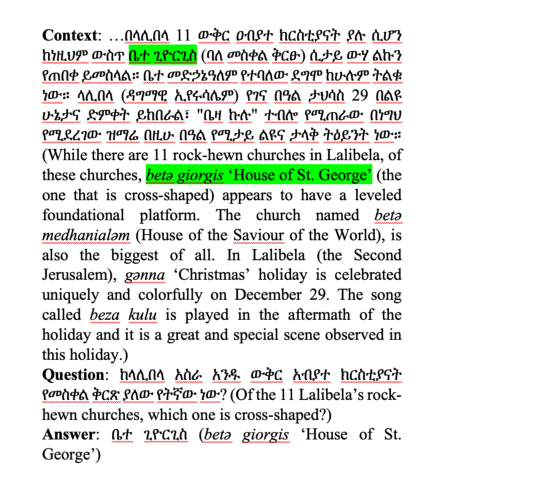
Figure 1: Amh-QuAD context, question, and answer triplets.
Unlike that, how, why, opinion, definition, and recommendation questions fall into the non-factoid category. For example, a question like "Why does water appear colorless and tasteless?" compels gathering relevant information, reasoning, and synthesizing multiple information pieces from different sources (Yang et al., 2019). Hence, based on the question types, a QA model and its benchmarking dataset are factoid or non-factoid (Dzendzik et al., 2021). Besides, the data source used to answer a question contains generic information about many things or information specific to a particular domain, like sports, geography, or medicine. Thus, based on the domain of the data source and the question, domain-dependent QA systems are referred to as closed and domain-independent as open QA (Chen and Yih, 2020). Furthermore, QA datasets and models differ in how the answer is retrieved - extractive or generative. Extractive QA datasets like SQuAD (Rajpurkar et al., 2016) measure a QA model competency in predicting the corresponding start and end tokens of the answer span from a context. Unlike that, generative QA datasets contain questions whose answer is a context comprehension, not a direct copy (Raffel et al., 2020).
The architecture of QA systems typically includes question analysis modules to understand questions, information retrieval (IR) systems to locate relevant documents or data and answer extraction mechanisms to extract accurate answers from the retrieved information (Abedissa and Libsie, 2019). In which a natural language question comes into the question analysis module, and an answer flows out of the answer processing module (Chen and Yih, 2020). The question analysis component analyzes the input question in several ways. One is a morphosyntactic analysis, assigning the part-of-speech tag to each word in the question, indicating whether a word is a verb, noun, or adjective. Then, classify questions to identify the semantic type of the question (Utomo et al., 2017). The simplest method of question classification is to use a set of rules that map patterns of questions into question types by analyzing the interrogative terms of the question (wh-terms). However, developing such rules takes time, and adapting to a new domain is challenging. An alternative approach to question classification is the use of machine-learning techniques. This approach treats question type identification using statistical classification packages like a support vector machine (Abedissa and Libsie, 2019). Finally, the question analysis component generates queries from the given question by selecting keywords and removing interrogative terms. In addition, expand the set of keywords using synonyms (Utomo et al., 2017).
The document retrieval component is a standard document retrieval system that identifies a subset of documents that contain terms of a given query from the total document collection deemed most likely to have an answer to the question (Utomo et al., 2017). While trying to identify relevant information more accurately, it splits the documents into several passages and treats the passages as documents. Using a passage-based retrieval approach instead of a full-document retrieval approach has the advantage of returning short text excerpts instead of entire documents, which are easier to process by later components of the question-answering system (Chen et al., 2017).
The answer processing component takes retrieved documents likely to contain an answer to the question and specifies what types of phrases should count as correct answers. Then, it extracts several candidate answers, ranks them in their probable correctness, and returns an answer from those top-ranked phrases. Answer extraction and selection are treated as a classification or ranking problem and solved using heuristics and machine learning methods. Since deep neural networks learn to select features by end-to-end training, most recent QA models use a neural architecture to encode contexts and questions into a vector space and reason over them (Mozannar et al., 2019).
In the era of deep learning, especially pre-trained language models like BERT (Kenton and Toutanova, 2019) enables robust QA model development (Laskar et al., 2020). Besides, the introduction of multi-lingual language models like Cross Language Multilingual-Roberta (XLM-R) (Conneau et al., 2020) and mBERT (Wu and Dredze, 2020) contribute to the advancements of the cross and multi-lingual QA. Existing deep learning-based QA systems fall into retriever-reader, dense retriever and end-to-end training, and retriever-free approaches (Chen and Yih, 2020).
The retriever-reader-based QA models first retrieve relevant passages, then read top-ranked passages and predict the beginning and end positions of the answer text from a context. DrQA (Chen et al., 2017) is a typical example of this approach. In the DrQA model, the retriever uses traditional sparse vector space methods, representing every question and document as bag-of-words vectors weighted by TF-IDF (term frequency-invert document frequency). Then, the retriever passes five top-ranked documents to the reader component. The reader uses a 3-layer bidirectional long-short-term memory (LSTM) (), which encodes the question and the top-ranked paragraphs as a sequence of feature vectors. Then, it predicts the probability of the start and end positions of the answer span (Cui et al., 2019).
The QA models in the retriever-generator approach follow the major paradigm shift towards neural-based IR. To answer a question, generate the response using a retrieved-context instead of predicting start/end positions (Lewis et al., 2020b).
Unlike the retriever-reader and retriever-generator approaches, the generative approach generates free text as an answer to respond to questions using the knowledge in its parameters (Roberts et al., 2020). To test the capability of memorizing factual knowledge of pre-trained language models, Roberts (Roberts et al., 2020) fine-tuned the T5 (Text-to-Text Transfer Transformer) (Raffel et al., 2020) language model to answer questions without providing it with any additional information or context.
Specific to Amharic, there are very few QA models (Abedissa and Libsie, 2019; Elema, 2022; Yimam and Libsie, 2009); however, none provide a public dataset. Therefore, this paper introduces the first factoid extractive open-domain Amharic Question Answering Dataset (Amh-QuAD), the dataset can be found online at https://github.com/semantic-systems/amharic-qa.
As shown in Figure Figure 1, the Amh-QuAD dataset comprises context, question, and answer triplets. The contexts consist of articles gathered from Amharic Wikipedia, while we crowdsource 2628 question-answer pairs from 378 contexts. For example, for the question given in Figure Figure 1, "ከላሊበላ አስራ አንድ ውቅር አብያተ ክርስቲያናት የመስቀል ቅርጽ ያለው የትኛው ነው?" (Of the 11 Lalibela's rockhewn churches, which one is cross-shaped?), the answer "ቤተ ጊዮርጊስ" (betə giorgis 'House of St. George') is the span from the context. In our work, in addition to the crowdsourced question-answer pairs, we have set baseline F1-score values by implementing a QA model with the retriever and reader components. We fine-tuned the XLMR model for the reader component using the Amh-QuAD training set and achieved an 81.34 F-score value.
2. Amharic Interrogative Sentences
Amharic, an indigenous African language from Ethiopia, has its unique writing system using the Ge'ez script known as ፊደል (Fidel). As shown in Figure Figure 2, an Amharic interrogative sentence is formulated using information-seeking pronouns like "ምን" (what), "መቼ" (when), "ማን" (who), "የት" (where), "የትኛው" (which) etc. or prepositional interrogative phrases like "ለምን" [ለ-ምን] (why), "በምን" [በ-ምን] (by what), etc. Also, verb phrases such as ግለጽ (explain), ዘርዝር|ሪ (list), አንፃፅር|ሪ|ሩ (compare), etc. are used to pose questions (Yimam, 2009; Amare, 2013).
3. Related Work
Among the existing English QA datasets, SQuAD (Rajpurkar et al., 2016) paved the way by creating question-answer pairs from Wikipedia articles using crowd workers, where each question answer is a span of text in the articles. Chinese MRC (Cui et al., 2019), Vietnamese QA (Do et al., 2021), and other data sets listed in (Dzendzik et al., 2021; Rogers et al., 2023) also follow the same curation step as SQuAD. Following crowdsourcing, TigQuAD (Gaim et al., 2023) introduces a QA dataset for the low-resourced Semitic language Tigrinya from newspapers. Amharic and Tigrinya are both Semitic languages. However, the linguistic differences in the writing scripts of the two languages (Feleke, 2017) hinder TigQuAD from being used for testing and training Amharic QA models.
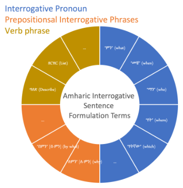
Figure 2: Amharic Interrogative Terms.
On the other hand, by automatically translating SQuAD into their respective languages, German (Möller et al., 2021) and French (d'Hoffschmidt et al., 2020) versions have been created. The Arabic QA dataset (Mozannar et al., 2019) is created partly by translating from SQuAD and partly by crowdsourcing. Translating existing QA datasets to other languages is one solution for creating a large data set. However, we opt for the crowdsourcing approach due to the absence of a well-tested open-source English-to-Amharic machine translation tool.
In Amharic, there are very few QA models; TETEYEQ (Yimam and Libsie, 2009) answers factoid-type questions by extracting entity names using a rule-based answer extraction approach. Abedissa and Libsie( 2019) introduce a non-factoid QA model that answers biography, description, and definition questions. The definition-description answer extraction uses heuristics; meanwhile, it answers biography questions using a summarizer and validates the summary with a classifier. The work in (Elema, 2022) classifies questions using a neural network model, selects candidate answers by a hybrid Bi-LSTM and CNN model, and extracts answers as named entities utilizing a named entity recognizer. Unlike the existing Amharic QA systems, this study proposes a retriever-reader-based Amharic QA (AmhQA) that leverages a multi-lingual language model (Conneau et al., 2020). Beyond attempting to answer Amharic questions, work has yet to produce a published dataset suitable for training and testing the performance of Amharic QA models. Therefore, we present Amh-QuAD as a train & test benchmark for Amharic QA models.
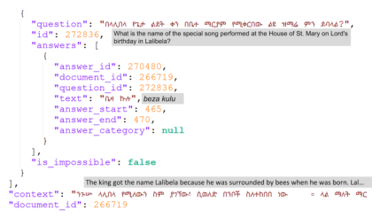
Figure 3: The Amh-QuAD structure.
4. The Amh-QuAD
The Amh-QuAD dataset is created in three phases: article gathering, crowdsourcing question-answer pairs, and annotation.
4.1. Collection and Cleaning
We collect the Amharic articles used as contexts from the Amharic Wikipedia dump. We keep only those articles larger than 2 KB and whose category is not "proverb" and "food preparation". Proverb articles are advantageous for generating reasoning questions. Additionally, 'food preparation' articles mainly consist of steps for preparing food, making them suitable for generating questions such as 'How is the step to cook...' and 'List the steps or ingredients added while cooking...'. Also, in both scenarios, the answer is not confined to a continuous text span within the article but instead spreads out among non-consecutive sentences. We further preprocess the remaining articles after filtration using the wiki-dump-reader tool to obtain clean texts. Subsequently, as long articles do not comprehensively stimulate question creation, each article is segmented based on its sub-topics. Finally, we randomly selected 378 cleaned articles.
4.2. Question-Answer Pair Crowdsourcing
We provide training on formulating questions that can be answered by a given context, following the Haystack guideline. Since we randomly select articles from Wikipedia, we inform annotators to flag any articles containing offensive content. Additionally, we encourage annotators to generate as many questions as possible from a given context.
4.3. Question-Answer Pair Validation and Annotation
The validation of the formulated question-answer pairs is about their correctness. We say a question is correct if the posed question is answerable by the given context, grammatically correct, and clearly defines the subject or object under consideration. For example, a question like 'How many parks does our (the) country have?' is ambiguous due to the possessive adjective 'our' or the definite article 'the'; it is challenging to know to which country it refers. We paraphrase such questions according to the context, besides rewriting the questions that do not explicitly state the subject or object. In addition, we exclude questions that are too long and have non-consecutive string answers from the annotation. Then, annotate the question-answer pairs using the Haystack annotation tool. As shown in Figure 3 The annotation tool provides the annotated question-answer pairs as JSON files in SQuAD format.
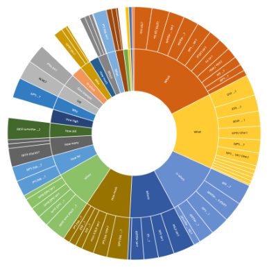
Figure 4: Interrogative terms distribution.
4.4. Data Analysis
As shown in Table Table 1, the Amh-QuAD contains 378 articles and 2628 question-answer pairs. The contexts, on average, have 172 words. Most questions' average word length is 9.22, whereas the answers are short, and their average word length is 2.66. Furthermore, we split the dataset into train, dev, and test with a size of 1728, 600, and 300, respectively. Besides, to see the distribution of interrogative terms on the test set, we manually identify the interrogative term and examine the adjacent two or three tokens. Figure Figure 4 illustrates the distribution of the interrogative terms, showcasing the variety in the question terms within Amh-QuAD.
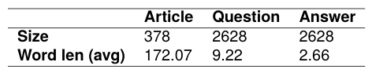
Table 1: Size and average word length of articles, questions, and answers.
4.5. Questions Expected Answer Type
Examining the question's interrogative terms and answers, we categorize the 300 test questions into person, location, time, organization, number, description, and other classes. Then, compute the percentage of the coverage of the expected answer types in the test set. As shown in Figure Figure 5, we found that most questions are about Location, Number, and Time, where each type has over 18% coverage. Description questions take 13% of the share and questions that seek a person's name as an answer are 14%. 10% of questions like "What is the working language of Ethiopia?" whose expected answer types are entities that cannot be included in the existing categories and fall into the 'OTHER' group. The list (3%) and organization (3%) are the smallest among the questions.
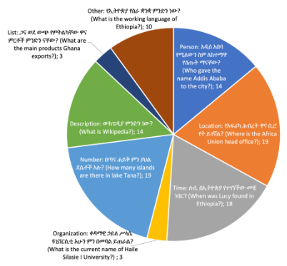
Figure 5: Question Types Distribution in %.
5. Amharic QA Model
Problem Definition: Given a question Q and a set of contexts C, the goal of the Amharic QA (AmhQA) model is to retrieve top-k relevant Ci from C and predict a span of text from the retrieved Ci's that answers Q.
- Retrieve top-k relevant contexts using a retriever:
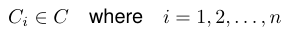
- Predict a span of text from the retrieved context via a reader:
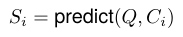
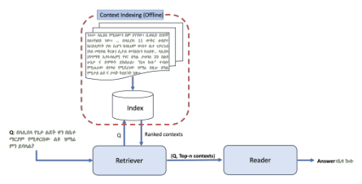
Figure 6: The Amharic QA model.
As shown in Figure 6, the AmhQA model has three components: offline indexer, retriever, and reader.
5.1. Indexing
Offline indexing begins by obtaining contexts from the test dataset. Then, an NLTK-based preprocessor tokenizes the contexts at the word level and splits the contexts into smaller segments based on a maximum length of 200 words with no word overlap. Finally, index the segmented contexts using the Elasticsearch Indexer. This indexing process creates an inverted index, enabling rapid and efficient retrieval of relevant information during subsequent queries.
5.2. Retriever
The AmhQA retriever component utilizes the BM25 (Best Match 25)algorithm to return the top-k most relevant contexts. The BM25 algorithm is a modified TF-IDF(Term Frequency - Inverse Document Frequency) that scores and orders contexts based on their relevance to the given question (Robertson and Zaragoza, 2009). The retriever calculates a relevance score for each document by considering term frequencies within documents, document length normalization, and term saturation. Term saturation is the concept that a term's relevance to a document decreases as it appears more frequently within the document. The term saturation function modifies the term frequency during the relevance score calculation.
For a question Q and context Ci, the BM25 scoring formula is:
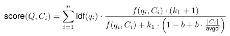
Where:
- n is the number of terms in the question and qi is the i-th term in the question.
- idf(qi) is the inverse document frequency of term qi.
- f(qi, Ci) is the term frequency of term qi in context Ci.
- |Ci| is the length of context Ci.
- avgcl is the average length of contexts in the collection; k1 and b are tuning parameters.
The parameters k1 and b control the term frequency component of the scoring. k1 is a positive tuning parameter that regulates the saturation effect of term frequency. A higher value of k1 increases the impact of term frequency on the scoring, making the algorithm more sensitive to the frequency of terms in the document. Conversely, a lower value of k1 reduces the impact of term frequency, leading to less effect on the scoring. The parameter b is a value between 0 and 1 that controls the influence of document length normalization. When b is closer to 0, document length normalization has a weaker effect, resulting in less attenuation of the term frequency component for longer documents. On the other hand, when b is closer to 1, document length normalization has a more substantial effect, causing the term frequency component to favor longer documents.
The retrieved documents are then ranked based on the value of score(Q, Ci).
5.3. Reader
The AmhQA reader component is created by fine-tuning an instance of the XLM-R pre-trained language model from Hugging Face using the open source Haystack framework on our training set. The XLM-R (Cross-lingual Language Model - RoBERTa) (Conneau et al., 2020) is a transformer-based language model trained on diverse languages, including Amharic. While fine-tuning, we use the default settings of the Haystack framework. The reader model generalizes for unseen examples despite being fine-tuned on a small dataset comprising 1728 samples. During the answer retrieval, the reader tokenizes the question Q and context Ci, encodes the tokenized question and context, and produces probability distributions of the answer span start and end indices. Finally, it decodes the answer span indices into human-readable text based on the highest probability span.
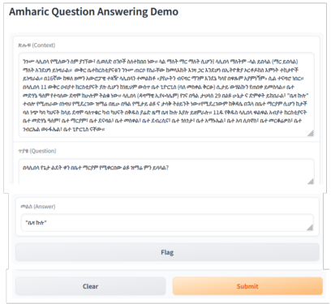
Figure 7: AmhQA Prototype Interface.
6. Experiment
6.1. Baseline Model
Since the Amh-QuAD dataset contains a set of contexts and question-answer pairs, its inherent task is reading comprehension (RC) (Rajpurkar et al., 2016). That is, given a question Q and a context C, the goal of the model is to identify a word or group of consecutive words from C that answers Q. Hence, based on this assumption, we have set a baseline value for the Amh-QuAD using an XLM-R-based RC and with our fine-tuned reader model. Figure 7 shows the RC setting of the AmhQA model prototype interface.
On the other hand, our retriever-reader (RR) based AmhQA model first retrieves relevant passages and then reads top-ranked passages to predict the start and end positions of the answer. The retriever part is based on BM25, and the reader is implemented using our fine-tuned reader model.
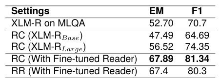
Table 2: AhmQA performance in RC and RR settings.
6.2. Evaluation and Discussion
The goal of evaluating a QA model is to measure the model's accuracy and its components. For QA datasets where the answer is a span of a text, an exact match (EM) with the gold answer is widely utilized (Rajpurkar et al., 2016). The EM metrics have an all-or-nothing drawback. To overcome this, precision, recall, and their harmonic mean, the F-Score value, is also used (Chen et al., 2017). Recall (R) gives the fraction of words that the system has chosen from the totality of words found in the actual answer, and precision (P) measures the fraction of system answers that are correctly chosen. Besides, Mean Reciprocal Recall (MRR) and Mean Average Precision (MAP) metrics evaluate the retriever performance.
As shown in Table 2, on the RC setting the XLM-RLarge F1 score is 74.35, whereas the XLM-RBase F1 score is 64.69. The F1 score of the XLM-RLarge on the Amh-QuAD test set was comparable to its average F1 score (70.7) on the MLQA dataset for other seven languages (Lewis et al., 2020a). Our fine-tuned reader also led to substantial improvements, yielding an EM score of 67.89 and an F1 score of 81.34. Even though the difference in the F1 scores achieved by the RC (81.34) and the RR (80.3) settings is minimal, one reason is the segmentation of contexts without overlap during indexing in the RR configuration. The segmentation can split the answer strings into non-overlapping segments, making it difficult for the RR to extract accurate answers. Unlike that, the RC model uses whole context embedding to extract answers from passages, enabling it to achieve better results. Furthermore, the RR includes the retrieval and reading components, introducing complexities in integrating and processing retrieved contexts that affect performance.
6.3. Ablation Study
As shown in Table 3, when the retriever number of context retrieval configuration is top-1, MRR and MAP are high at 82.9, indicating their effectiveness in correctly ranking and retrieving relevant information. Moreover, when expanding the retrieval to the top three results, the scores increase even further. The MRR and MAP reach 88.4 and 88.2, respectively, which indicates that considering multiple retrieval options improves the retriever's ability to capture a broader range of relevant documents, resulting in better ranking and precision. The significant improvement in performance from the top-1 to top-3 settings highlights the necessity of considering multiple retrieval options to optimize the effectiveness of the retriever in the QA models.
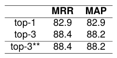
Table 3: AhmQA Retriever component ablation. **(With Fine-tuned Reader)
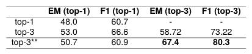
Table 4: AhmQA Reader component ablation. **(With Fine-tuned Reader)
Table 4 shows the reader component's performance across various metrics and retrieval settings. When considering only the top-1 retrieved context, the Exact Match (EM) and F1 scores are 48.0 and 60.7, respectively. Expanding the retrieved context to the top three results increases the EM and F1 scores at top-1 to 53.0 and 66.6, respectively. Furthermore, when evaluating based on the top three retrieved contexts, both EM and F1 scores experience significant improvements, reaching 58.72 and 73.22, respectively. Highlights the importance of considering multiple retrieved contexts for optimizing the reader's performance, as it allows for a more comprehensive synthesis of contexts.
The fine-tuned reader component has demonstrated a significant performance improvement compared to the previous evaluation. Specifically, the exact match (EM) score has increased to 67.4, indicating higher accuracy in providing precise answers. The F1 score has also improved, reaching 80.3, reflecting enhanced effectiveness in generating correct answers. The top-1 evaluation metrics also show improvements, with exact match top-1 and F1 top-1 scores increasing to 50.7 and 60.9, respectively. These results emphasize the enhanced performance of the fine-tuned reader across different evaluation settings. Overall, the results showcase the improvements achieved through fine-tuning, indicating a more reliable reader component for Amharic QA.
7. Summary
The Amh-QuAD dataset is an effort towards inclusiveness and accessibility in natural language processing (NLP). The development of this dataset will partly address the imbalance in language resources, particularly for underrepresented languages within the NLP community. The Amh-QuAD is the first publicly available factoid open-domain extractive Amharic QA dataset containing triplets of context, question, and answer curated from Amharic Wikipedia, which serves in RC and retriever-reader QA settings. In addition, we introduce a new AmhQA reader by fine-tuning a multilingual pre-trained language model. Also, set baseline values in reading comprehension and retriever-reader QA settings.
Notes
1 https://am.wikipedia.org/
2 https://dumps.wikimedia.org/amwiki/20210801/ last accessed 18 August 2021
3 https://pypi.org/project/wiki-dump-reader/
4 https://drive.google.com/file/d/1Wv3OIC0Z7ibHIzOm9Xw_r0gjTFmpl-33/view
5 https://docs.haystack.deepset.ai/docs/annotation
6 https://www.elastic.co/blog/what-is-an-elasticsearch-index
7 https://huggingface.co/deepset/xlm-roberta-large-squad2
8 https://github.com/deepset-ai/haystack/
9 https://huggingface.co/deepset/xlm-roberta-large-squad2
8. Bibliographical References
Tilahun Abedissa and Mulugeta Libsie. 2019. Amharic Question Answering for Biography, Definition, and Description Questions. In Fisseha Mekuria, Ethiopia Nigussie, and Tesfa Tegegne, editors, Information and Communication Technology for Development for Africa, volume 1026, pages 301-310. Springer International Publishing, Cham. Series Title: Communications in Computer and Information Science.
Getahun Amare. 2013. Amharic Grammar in Simple Way. Addis Ababa, Addis Ababa University Press.
B Barla Cambazoglu, Mark Sanderson, Falk Scholer, and Bruce Croft. 2020. A Review of Public Datasets in Question Answering Research. ACM SIGIR Forum, 54(2):23.
Danqi Chen, Adam Fisch, Jason Weston, and Antoine Bordes. 2017. Reading Wikipedia to answer open-domain questions. In Proceedings of the 55th Annual Meeting of the Association for Computational Linguistics (Volume 1: Long Papers), pages 1870-1879, Vancouver, Canada. Association for Computational Linguistics.
Danqi Chen and Wen-tau Yih. 2020. Open-Domain Question Answering. In Proceedings of the 58th Annual Meeting of the Association for Computational Linguistics: Tutorial Abstracts, pages 34-37, Online. Association for Computational Linguistics.
Alexis Conneau, Kartikay Khandelwal, Naman Goyal, Vishrav Chaudhary, Guillaume Wenzek, Francisco Guzmán, Edouard Grave, Myle Ott, Luke Zettlemoyer, and Veselin Stoyanov. 2020. Unsupervised Cross-lingual Representation Learning at Scale. In Proceedings of the 58th Annual Meeting of the Association for Computational Linguistics, pages 8440-8451, Online. Association for Computational Linguistics.
Yiming Cui, Ting Liu, Wanxiang Che, Li Xiao, Zhipeng Chen, Wentao Ma, Shijin Wang, and Guoping Hu. 2019. "a span-extraction dataset for Chinese machine reading comprehension". In Proceedings of the 2019 Conference on Empirical Methods in Natural Language Processing and the 9th International Joint Conference on Natural Language Processing (EMNLP-IJCNLP), pages 5883-5889, Hong Kong, China. Association for Computational Linguistics.
Martin d'Hoffschmidt, Wacim Belblidia, Quentin Heinrich, Tom Brendlé, and Maxime Vidal. 2020. FQuAD: French question answering dataset. In Findings of the Association for Computational Linguistics: EMNLP 2020, pages 1193-1208, Online. Association for Computational Linguistics.
Phong Nguyen-Thuan Do, Nhat Duy Nguyen, Tin Van Huynh, Kiet Van Nguyen, Anh Gia-Tuan Nguyen, and Ngan Luu-Thuy Nguyen. 2021. Sentence Extraction-Based Machine Reading Comprehension for Vietnamese. In Knowledge Science, Engineering and Management: 14th International Conference, KSEM 2021, Tokyo, Japan, August 14-16, 2021, Proceedings, Part II, page 511-523, Berlin, Heidelberg. Springer-Verlag.
Daria Dzendzik, Jennifer Foster, and Carl Vogel. 2021. English Machine Reading Comprehension Datasets: A Survey. In Proceedings of the 2021 Conference on Empirical Methods in Natural Language Processing, pages 8784-8804, Online and Punta Cana, Dominican Republic. Association for Computational Linguistics.
Abenezer Mengistu Elema. 2022. Developing Amharic Question Answering Model Over Unstructured Data Source Using Deep Learning Approach. In 2022 International Conference on Information and Communication Technology for Development for Africa (ICT4DA), pages 108-113.
Alexander Fabbri, Patrick Ng, Zhiguo Wang, Ramesh Nallapati, and Bing Xiang. 2020. Template-Based Question Generation from Retrieved Sentences for Improved Unsupervised Question Answering. In Proceedings of the 58th Annual Meeting of the Association for Computational Linguistics, pages 4508-4513, Online. Association for Computational Linguistics.
Tekabe Legesse Feleke. 2017. The similarity and mutual intelligibility between Amharic and Tigrigna varieties. In Proceedings of the Fourth Workshop on NLP for Similar Languages, Varieties and Dialects (VarDial), pages 47-54, Valencia, Spain. Association for Computational Linguistics.
Fitsum Gaim, Wonsuk Yang, Hancheol Park, and Jong Park. 2023. Question-answering in a low-resourced language: Benchmark dataset and models for Tigrinya. In Proceedings of the 61st Annual Meeting of the Association for Computational Linguistics (Volume 1: Long Papers), pages 11857-11870, Toronto, Canada. Association for Computational Linguistics.
Jacob Devlin Ming-Wei Chang Kenton and Lee Kristina Toutanova. 2019. Bert: Pre-training of deep bidirectional transformers for language understanding. In Proceedings of naacL-HLT, volume 1, page 2.
Md Tahmid Rahman Laskar, Jimmy Xiangji Huang, and Enamul Hoque. 2020. Contextualized embeddings based transformer encoder for sentence similarity modeling in answer selection task. In Proceedings of the Twelfth Language Resources and Evaluation Conference, pages 5505-5514, Marseille, France. European Language Resources Association.
Patrick Lewis, Barlas Oguz, Ruty Rinott, Sebastian Riedel, and Holger Schwenk. 2020a. MLQA: Evaluating Cross-lingual Extractive Question Answering. In Proceedings of the 58th Annual Meeting of the Association for Computational Linguistics, pages 7315-7330, Online. Association for Computational Linguistics.
Patrick Lewis, Ethan Perez, Aleksandra Piktus, Fabio Petroni, Vladimir Karpukhin, Naman Goyal, Heinrich Küttler, Mike Lewis, Wen-tau Yih, Tim Rocktäschel, Sebastian Riedel, and Douwe Kiela. 2020b. Retrieval-augmented generation for knowledge-intensive NLP tasks. In Proceedings of the 34th International Conference on Neural Information Processing Systems, NIPS'20, Red Hook, NY, USA. Curran Associates Inc.
Timo Möller, Julian Risch, and Malte Pietsch. 2021. GermanQuAD and GermanDPR: Improving nonEnglish question answering and passage retrieval. In Proceedings of the 3rd Workshop on Machine Reading for Question Answering, pages 42-50, Punta Cana, Dominican Republic. Association for Computational Linguistics.
Hussein Mozannar, Elie Maamary, Karl El Hajal, and Hazem Hajj. 2019. Neural Arabic question answering. In Proceedings of the Fourth Arabic Natural Language Processing Workshop, pages 108-118, Florence, Italy. Association for Computational Linguistics.
Colin Raffel, Noam Shazeer, Adam Roberts, Katherine Lee, Sharan Narang, Michael Matena, Yanqi Zhou, Wei Li, and Peter J. Liu. 2020. Exploring the limits of transfer learning with a unified text-to-text transformer. J. Mach. Learn. Res., 21(1).
Pranav Rajpurkar, Jian Zhang, Konstantin Lopyrev, and Percy Liang. 2016. SQuAD: 100,000+ Questions for Machine Comprehension of Text. arXiv:1606.05250 [cs]. ArXiv: 1606.05250.
Adam Roberts, Colin Raffel, and Noam Shazeer. 2020. How Much Knowledge Can You Pack Into the Parameters of a Language Model? In Proceedings of the 2020 Conference on Empirical Methods in Natural Language Processing (EMNLP), pages 5418-5426, Online. Association for Computational Linguistics.
Stephen Robertson and Hugo Zaragoza. 2009. The probabilistic relevance framework: Bm25 and beyond. Found. Trends Inf. Retr., 3(4):333-389.
Anna Rogers, Matt Gardner, and Isabelle Augenstein. 2023. QA Dataset Explosion: A Taxonomy of NLP Resources for Question Answering and Reading Comprehension. ACM Comput. Surv., 55(10).
Fandy Setyo Utomo, Nanna Suryana, and Mohd Sanusi Aami. 2017. Question Answering System: A Review on Question Analysis, Document Processing, and Answer Extraction Techniques. Journal of Theoretical & Applied Information Technology, 95(14).
Shijie Wu and Mark Dredze. 2020. Are all languages created equal in multilingual BERT? In Proceedings of the 5th Workshop on Representation Learning for NLP, pages 120-130, Online. Association for Computational Linguistics.
Wei Yang, Yuqing Xie, Aileen Lin, Xingyu Li, Luchen Tan, Kun Xiong, Ming Li, and Jimmy Lin. 2019. End-to-end open-domain question answering with BERTserini. In Proceedings of the 2019 Conference of the North American Chapter of the Association for Computational Linguistics (Demonstrations), pages 72-77, Minneapolis, Minnesota. Association for Computational Linguistics.
Baye Yimam. 2009. Amharic Grammar. Addis Ababa, Addis Ababa University Press.
Seid Muhie Yimam and Mulugeta Libsie. 2009. TETEYEQ: Amharic question answering for factoid questions. IE-IR-LRL, 3(4):17.
Low Resource Question Answering: An Amharic Benchmarking Dataset
Systèmes de questions-réponses à faibles ressources : un jeu de données de référence pour l'amharique
Affiliations
Tilahun Abedissa Taffa1,2,3, Yaregal Assabie2, and Ricardo Usbeck3
1Semantic Systems, Universität Hamburg, Hamburg, Germany
2Department of Computer Science, Addis Ababa University, Addis Ababa, Ethiopia
3Leuphana Universität Lüneburg, Lüneburg, Germany
, ,
Affiliations
Tilahun Abedissa Taffa1,2,3, Yaregal Assabie2, and Ricardo Usbeck3
1Semantic Systems, Universität Hamburg, Hamburg, Germany
2Department of Computer Science, Addis Ababa University, Addis Ababa, Ethiopia
3Leuphana Universität Lüneburg, Lüneburg, Germany
, ,
Abstract
Résumé
Question Answering (QA) systems return concise answers or answer lists based on natural language text, which uses a given context document. Many resources go into curating QA datasets to advance the development of robust QA models. There is a surge in QA datasets for languages such as English; this is different for low-resource languages like Amharic. Indeed, there is no published or publicly available Amharic QA dataset. Hence, to foster further research in low-resource QA, we present the first publicly available benchmarking Amharic Question Answering Dataset (Amh-QuAD). We crowdsource 2,628 question-answer pairs from over 378 Amharic Wikipedia articles. Using the training set, we fine-tune an XLM-R-based language model and introduce a new reader model. Leveraging our newly fine-tuned reader run a baseline model to spark open-domain Amharic QA research interest. The best-performing baseline QA achieves an F-score of 80.3 and 81.34 in retriever-reader and reading comprehension settings.
Les systèmes de questions-réponses (QA) renvoient des réponses concises ou des listes de réponses à partir d'un texte en langage naturel, en utilisant un document contextuel donné. De nombreuses ressources sont consacrées à la création de jeux de données QA pour faire progresser le développement de modèles QA robustes. Il y a une augmentation des ensembles de données QA pour les langues telles que l'anglais; c'est différent pour les langues à faibles ressources comme l'amharique. En effet, il n'existe pas de jeu de données QA amharique publié ou disponible publiquement. Ainsi, pour encourager la recherche en QA à faibles ressources, nous présentons le premier jeu de données de référence public de questions-réponses en amharique (Amh-QuAD). Nous recueillons par crowdsourcing 2 628 paires question-réponse à partir de plus de 378 articles de Wikipédia en amharique. En utilisant l'ensemble d'entraînement, nous effectuons un réglage fin d'un modèle de langage basé sur XLM-R et introduisons un nouveau modèle de lecteur. En tirant parti de notre lecteur nouvellement affiné, nous exécutons un modèle de référence pour susciter l'intérêt de la recherche en QA amharique en domaine ouvert. Le modèle de référence QA le plus performant atteint un score F de 80,3 et 81,34 dans les configurations de récupérateur-lecteur et de compréhension de lecture.
Keywords
Mots-clés
Low Resource Question Answering, Amharic Question Answering Dataset, Amharic Reading Comprehension, Amh-QuAD
Systèmes de questions-réponses à faibles ressources, jeu de données de questions-réponses en amharique, compréhension de lecture en amharique, Amh-QuAD
1. Introduction
1. Introduction
The task of Question Answering (QA) is to accurately retrieve an answer to a natural language question from a certain underlying data source (Chen and Yih, 2020). The standard train & test QA dataset creation is applied to evaluate models' question synthesis ability and answer accuracy. Crowdsourcing or automatic generation are common approaches in curating QA datasets (Dzendzik et al., 2021). In the crowdsourcing approach, crowd-workers formulate question-answer pairs within a given context. Crowdsourcing allows for the creation of high-quality question-answer pairs, but it is expensive. In contrast, automatic generation approaches leverage language generation models, templates, or machine translation in formulating question-answer pairs. However, attaining a reliable model capable of generating question-answer pairs as accurate as those from a human poses a challenge. Therefore, studies introduce humans in the loop to minimize the generation of trivial, un-grammatical, and incorrect question-answer pairs (Cambazoglu et al., 2020; Fabbri et al., 2020).
La tâche de Question Answering (QA) consiste à récupérer avec précision une réponse à une question en langage naturel à partir d'une certaine source de données sous-jacente (Chen et Yih, 2020). La création d'ensembles de données QA standard train & test est appliquée pour évaluer la capacité de synthèse des questions et la précision des réponses des modèles. Le crowdsourcing ou la génération automatique sont des approches courantes dans la création de jeux de données QA (Dzendzik et al., 2021). Dans l’approche crowdsourcing, les crowd-workers formulent des paires question-réponse dans un contexte donné. Le crowdsourcing permet la création de paires question-réponse de haute qualité, mais il est coûteux. En revanche, les approches de génération automatique tirent parti de modèles de génération de langage, de modèles ou de traduction automatique pour formuler des paires question-réponse. Cependant, obtenir un modèle fiable capable de générer des paires question-réponse aussi précises que celles d'un humain pose un défi. Par conséquent, les études introduisent des humains dans la boucle pour minimiser la génération de paires question-réponse triviales, non grammaticales et incorrectes (Cambazoglu et al., 2020; Fabbri et al., 2020).
The distinction between the existing QA datasets lies in 1) the question expected answer: factoid vs. non-factoid, 2) the data source domain: closed vs. open, and 3) the answer formulation sub-task: extractive vs. generative. Factoid questions like "Who is the founder of Ethiopia's capital Addis Ababa?" (Answer: "Emperor Menelik II") requires a named entity such as proper noun, date, number, or short phrase as an answer (Abedissa and Libsie, 2019).
La distinction entre les jeux de données QA existants réside dans 1) la réponse attendue à la question : factuelle vs. non factuelle, 2) le domaine de la source de données : fermé vs. ouvert, et 3) la sous-tâche de formulation de la réponse : extractive vs. générative. Les questions factuelles comme "Qui est le fondateur de la capitale de l'Éthiopie, Addis-Abeba ?" (Réponse : "L'empereur Ménélik II") nécessitent une entité nommée telle qu'un nom propre, une date, un nombre ou une courte phrase comme réponse (Abedissa et Libsie, 2019).
Figure 1: Amh-QuAD context, question, and answer triplets.
Figure 1 : Triplets de contexte, question et réponse Amh-QuAD.
Unlike that, how, why, opinion, definition, and recommendation questions fall into the non-factoid category. For example, a question like "Why does water appear colorless and tasteless?" compels gathering relevant information, reasoning, and synthesizing multiple information pieces from different sources (Yang et al., 2019). Hence, based on the question types, a QA model and its benchmarking dataset are factoid or non-factoid (Dzendzik et al., 2021). Besides, the data source used to answer a question contains generic information about many things or information specific to a particular domain, like sports, geography, or medicine. Thus, based on the domain of the data source and the question, domain-dependent QA systems are referred to as closed and domain-independent as open QA (Chen and Yih, 2020). Furthermore, QA datasets and models differ in how the answer is retrieved - extractive or generative. Extractive QA datasets like SQuAD (Rajpurkar et al., 2016) measure a QA model competency in predicting the corresponding start and end tokens of the answer span from a context. Unlike that, generative QA datasets contain questions whose answer is a context comprehension, not a direct copy (Raffel et al., 2020).
Contrairement à cela, les questions comment, pourquoi, opinion, définition et recommandation entrent dans la catégorie des questions non factoïdes. Par exemple, une question comme « Pourquoi l'eau apparaît-elle incolore et insipide ? » oblige à rassembler des informations pertinentes, à raisonner et à synthétiser plusieurs éléments d'information provenant de différentes sources (Yang et al., 2019). Par conséquent, en fonction des types de questions, un modèle de QA et son jeu de données de référence sont de type factoïde ou non factoïde (Dzendzik et al., 2021). De plus, la source de données utilisée pour répondre à une question contient des informations génériques sur de nombreuses choses ou des informations spécifiques à un domaine particulier, comme le sport, la géographie ou la médecine. Ainsi, en fonction du domaine de la source de données et de la question, les systèmes de QA dépendants du domaine sont appelés fermés et les systèmes indépendants du domaine sont appelés QA ouverts (Chen et Yih, 2020). Par ailleurs, les jeux de données et les modèles de QA diffèrent selon la manière dont la réponse est récupérée - extractive ou générative. Les jeux de données de QA extractive comme SQuAD (Rajpurkar et al., 2016) mesurent la compétence d'un modèle de QA à prédire les jetons de début et de fin correspondants de la plage de réponse à partir d'un contexte. Contrairement à cela, les jeux de données de QA générative contiennent des questions dont la réponse est une compréhension du contexte, et non une copie directe (Raffel et al., 2020).
The architecture of QA systems typically includes question analysis modules to understand questions, information retrieval (IR) systems to locate relevant documents or data and answer extraction mechanisms to extract accurate answers from the retrieved information (Abedissa and Libsie, 2019). In which a natural language question comes into the question analysis module, and an answer flows out of the answer processing module (Chen and Yih, 2020). The question analysis component analyzes the input question in several ways. One is a morphosyntactic analysis, assigning the part-of-speech tag to each word in the question, indicating whether a word is a verb, noun, or adjective. Then, classify questions to identify the semantic type of the question (Utomo et al., 2017). The simplest method of question classification is to use a set of rules that map patterns of questions into question types by analyzing the interrogative terms of the question (wh-terms). However, developing such rules takes time, and adapting to a new domain is challenging. An alternative approach to question classification is the use of machine-learning techniques. This approach treats question type identification using statistical classification packages like a support vector machine (Abedissa and Libsie, 2019). Finally, the question analysis component generates queries from the given question by selecting keywords and removing interrogative terms. In addition, expand the set of keywords using synonyms (Utomo et al., 2017).
L'architecture des systèmes de QA comprend généralement des modules d'analyse de questions pour comprendre les questions, des systèmes de recherche d'information (IR) pour localiser les documents ou données pertinents et des mécanismes d'extraction de réponses pour extraire des réponses précises de l'information récupérée (Abedissa et Libsie, 2019). Dans lequel une question en langage naturel entre dans le module d'analyse de questions, et une réponse sort du module de traitement des réponses (Chen et Yih, 2020). Le composant d'analyse de questions analyse la question d'entrée de plusieurs manières. L'une d'elles est une analyse morphosyntaxique, qui attribue la catégorie grammaticale à chaque mot de la question, en indiquant si un mot est un verbe, un nom ou un adjectif. Ensuite, classifiez les questions pour identifier le type sémantique de la question (Utomo et al., 2017). La méthode la plus simple de classification des questions consiste à utiliser un ensemble de règles qui cartographient les modèles de questions en types de questions en analysant les termes interrogatifs de la question (wh-terms). Cependant, le développement de telles règles prend du temps, et l'adaptation à un nouveau domaine est un défi. Une approche alternative à la classification des questions est l'utilisation de techniques d'apprentissage automatique. Cette approche traite l'identification du type de question en utilisant des packages de classification statistique comme une machine à vecteurs de support (Abedissa et Libsie, 2019). Enfin, le composant d'analyse des questions génère des requêtes à partir de la question donnée en sélectionnant des mots-clés et en supprimant les termes interrogatifs. En outre, élargissez l’ensemble des mots-clés en utilisant des synonymes (Utomo et al., 2017).
The document retrieval component is a standard document retrieval system that identifies a subset of documents that contain terms of a given query from the total document collection deemed most likely to have an answer to the question (Utomo et al., 2017). While trying to identify relevant information more accurately, it splits the documents into several passages and treats the passages as documents. Using a passage-based retrieval approach instead of a full-document retrieval approach has the advantage of returning short text excerpts instead of entire documents, which are easier to process by later components of the question-answering system (Chen et al., 2017).
Le composant de récupération de documents est un système de récupération de documents standard qui identifie un sous-ensemble de documents contenant des termes d'une requête donnée à partir de la collection totale de documents jugés les plus susceptibles de contenir une réponse à la question (Utomo et al., 2017). Tout en essayant d'identifier les informations pertinentes plus précisément, il divise les documents en plusieurs passages et traite les passages comme des documents. L’utilisation d’une approche de récupération basée sur les passages au lieu d’une approche de récupération de documents complets présente l’avantage de renvoyer de courts extraits de texte au lieu de documents entiers, qui sont plus faciles à traiter par les composants ultérieurs du système de questions-réponses (Chen et al., 2017).
The answer processing component takes retrieved documents likely to contain an answer to the question and specifies what types of phrases should count as correct answers. Then, it extracts several candidate answers, ranks them in their probable correctness, and returns an answer from those top-ranked phrases. Answer extraction and selection are treated as a classification or ranking problem and solved using heuristics and machine learning methods. Since deep neural networks learn to select features by end-to-end training, most recent QA models use a neural architecture to encode contexts and questions into a vector space and reason over them (Mozannar et al., 2019).
Le composant de traitement des réponses prend les documents récupérés susceptibles de contenir une réponse à la question et spécifie quels types de phrases doivent compter comme des réponses correctes. Ensuite, il extrait plusieurs réponses candidates, les classe dans leur correction probable, et renvoie une réponse à partir de ces phrases les mieux classées. L'extraction et la sélection des réponses sont traitées comme un problème de classification ou de classement et résolues à l'aide de méthodes heuristiques et d'apprentissage automatique. Puisque les réseaux de neurones profonds apprennent à sélectionner des caractéristiques par un entraînement de bout en bout, la plupart des modèles récents de QA utilisent une architecture neuronale pour encoder les contextes et les questions dans un espace vectoriel et raisonner à leur sujet (Mozannar et al., 2019).
In the era of deep learning, especially pre-trained language models like BERT (Kenton and Toutanova, 2019) enables robust QA model development (Laskar et al., 2020). Besides, the introduction of multi-lingual language models like Cross Language Multilingual-Roberta (XLM-R) (Conneau et al., 2020) and mBERT (Wu and Dredze, 2020) contribute to the advancements of the cross and multi-lingual QA. Existing deep learning-based QA systems fall into retriever-reader, dense retriever and end-to-end training, and retriever-free approaches (Chen and Yih, 2020).
À l'ère de l'apprentissage profond, en particulier les modèles de langage pré-entraînés comme BERT (Kenton et Toutanova, 2019) permettent un développement robuste de modèles de QA (Laskar et al., 2020). En outre, l'introduction de modèles de langage multilingues comme Cross Language Multilingual-Roberta (XLM-R) (Conneau et al., 2020) et mBERT (Wu et Dredze, 2020) contribue aux avancées de la QA translingue et multilingue. Les systèmes de QA existants fondés sur l'apprentissage profond se répartissent en approches de type retriever-reader, retriever dense avec entraînement de bout en bout, et approches sans retriever (Chen et Yih, 2020).
The retriever-reader-based QA models first retrieve relevant passages, then read top-ranked passages and predict the beginning and end positions of the answer text from a context. DrQA (Chen et al., 2017) is a typical example of this approach. In the DrQA model, the retriever uses traditional sparse vector space methods, representing every question and document as bag-of-words vectors weighted by TF-IDF (term frequency-invert document frequency). Then, the retriever passes five top-ranked documents to the reader component. The reader uses a 3-layer bidirectional long-short-term memory (LSTM) (), which encodes the question and the top-ranked paragraphs as a sequence of feature vectors. Then, it predicts the probability of the start and end positions of the answer span (Cui et al., 2019).
Les modèles QA basés sur retriever-reader récupèrent d'abord les passages pertinents, puis lisent les passages les mieux classés et prédisent les positions de début et de fin du texte de réponse à partir d'un contexte. DrQA (Chen et al., 2017) est un exemple typique de cette approche. Dans le modèle DrQA, le récupérateur utilise des méthodes traditionnelles d'espace vectoriel éparse, représentant chaque question et document comme des vecteurs de sacs de mots pondérés par TF-IDF (fréquence des termes-fréquence inverse du document). Ensuite, le récupérateur transmet les cinq documents les mieux classés au composant lecteur. Le reader utilise une mémoire bidirectionnelle à long court terme (LSTM) à 3 couches (), qui encode la question et les paragraphes les mieux classés comme une séquence de vecteurs de caractéristiques. Ensuite, il prédit la probabilité des positions de début et de fin de la plage de réponses (Cui et al., 2019).
The QA models in the retriever-generator approach follow the major paradigm shift towards neural-based IR. To answer a question, generate the response using a retrieved-context instead of predicting start/end positions (Lewis et al., 2020b).
Les modèles QA de l'approche retriever-generator suivent le changement de paradigme majeur vers l'IR basée sur le neural. Pour répondre à une question, générez la réponse en utilisant un contexte récupéré au lieu de prédire les positions de début et de fin (Lewis et al., 2020b).
Unlike the retriever-reader and retriever-generator approaches, the generative approach generates free text as an answer to respond to questions using the knowledge in its parameters (Roberts et al., 2020). To test the capability of memorizing factual knowledge of pre-trained language models, Roberts (Roberts et al., 2020) fine-tuned the T5 (Text-to-Text Transfer Transformer) (Raffel et al., 2020) language model to answer questions without providing it with any additional information or context.
Contrairement aux approches récupérateur-lecteur et récupérateur-générateur, l’approche générative génère du texte libre comme réponse pour répondre à des questions en utilisant les connaissances dans ses paramètres (Roberts et al., 2020). Pour tester la capacité de mémorisation des connaissances factuelles des modèles de langage pré-entraînés, Roberts (Roberts et al., 2020) a adapté le modèle de langage T5 (Text-to-Text Transfer Transformer) (Raffel et al., 2020) pour répondre à des questions sans lui fournir d'informations ou de contexte supplémentaires.
Specific to Amharic, there are very few QA models (Abedissa and Libsie, 2019; Elema, 2022; Yimam and Libsie, 2009); however, none provide a public dataset. Therefore, this paper introduces the first factoid extractive open-domain Amharic Question Answering Dataset (Amh-QuAD), the dataset can be found online at https://github.com/semantic-systems/amharic-qa.
Spécifiquement pour l'amharique, il existe très peu de modèles de QA (Abedissa et Libsie, 2019 ; Elema, 2022 ; Yimam et Libsie, 2009) ; cependant, aucun ne fournit de jeu de données public. Par conséquent, cet article présente le premier jeu de données de questions-réponses amharique extractif factuel à domaine ouvert (Amh-QuAD), le jeu de données est disponible en ligne à l'adresse https://github.com/semantic-systems/amharic-qa.
As shown in Figure Figure 1, the Amh-QuAD dataset comprises context, question, and answer triplets. The contexts consist of articles gathered from Amharic Wikipedia, while we crowdsource 2628 question-answer pairs from 378 contexts. For example, for the question given in Figure Figure 1, "ከላሊበላ አስራ አንድ ውቅር አብያተ ክርስቲያናት የመስቀል ቅርጽ ያለው የትኛው ነው?" (Of the 11 Lalibela's rockhewn churches, which one is cross-shaped?), the answer "ቤተ ጊዮርጊስ" (betə giorgis 'House of St. George') is the span from the context. In our work, in addition to the crowdsourced question-answer pairs, we have set baseline F1-score values by implementing a QA model with the retriever and reader components. We fine-tuned the XLMR model for the reader component using the Amh-QuAD training set and achieved an 81.34 F-score value.
Comme le montre la Figure 1, le jeu de données Amh-QuAD comprend des triplets de contexte, question et réponse. Les contextes sont constitués d’articles recueillis sur Wikipédia en amharique, tandis que nous avons collecté 2628 paires question-réponse provenant de 378 contextes. Par exemple, pour la question donnée dans la Figure 1, « ከላሊበላ አስራ አንድ ውቅር አብያተ ክርስቲያናት የመስቀል ቅርጽ ያለው የትኛው ነው ? » (Parmi les 11 églises monolithiques de Lalibela, laquelle a la forme d'une croix ?), la réponse « ቤተ ጊዮርጊስ » (betə giorgis 'Maison de Saint-Georges') est l'extrait du contexte. Dans notre travail, en plus des paires question-réponse crowdsourcées, nous avons défini des valeurs de score F1 de référence en mettant en œuvre un modèle QA avec les composants récupérateur et lecteur. Nous avons affiné le modèle XLMR pour le composant lecteur en utilisant l'ensemble d'entraînement Amh-QuAD et avons obtenu une valeur de F-score de 81.34.
2. Amharic Interrogative Sentences
2. Phrases interrogatives en amharique
Amharic, an indigenous African language from Ethiopia, has its unique writing system using the Ge'ez script known as ፊደል (Fidel). As shown in Figure Figure 2, an Amharic interrogative sentence is formulated using information-seeking pronouns like "ምን" (what), "መቼ" (when), "ማን" (who), "የት" (where), "የትኛው" (which) etc. or prepositional interrogative phrases like "ለምን" [ለ-ምን] (why), "በምን" [በ-ምን] (by what), etc. Also, verb phrases such as ግለጽ (explain), ዘርዝር|ሪ (list), አንፃፅር|ሪ|ሩ (compare), etc. are used to pose questions (Yimam, 2009; Amare, 2013).
L'amharique, une langue africaine autochtone d'Éthiopie, a son propre système d'écriture utilisant l'écriture ge'ez connue sous le nom de ፊደል (Fidel). Comme le montre la Figure 2, une phrase interrogative en amharique est formulée à l'aide de pronoms interrogatifs de recherche d'information comme "ምን" (quoi), "መቼ" (quand), "ማን" (qui), "የት" (où), "የትኛው" (lequel), etc. ou des phrases interrogatives prépositionnelles comme "ለምን" [ለ-ምን] (pourquoi), "በምን" [በ-ምን] (par quoi), etc. De plus, des verbes comme ግለጽ (expliquer), ዘርዝር|ሪ (lister), አንፃፅር|ሪ|ሩ (comparer), etc. sont utilisés pour poser des questions (Yimam, 2009; Amare, 2013).
3. Related Work
3. Travaux connexes
Among the existing English QA datasets, SQuAD (Rajpurkar et al., 2016) paved the way by creating question-answer pairs from Wikipedia articles using crowd workers, where each question answer is a span of text in the articles. Chinese MRC (Cui et al., 2019), Vietnamese QA (Do et al., 2021), and other data sets listed in (Dzendzik et al., 2021; Rogers et al., 2023) also follow the same curation step as SQuAD. Following crowdsourcing, TigQuAD (Gaim et al., 2023) introduces a QA dataset for the low-resourced Semitic language Tigrinya from newspapers. Amharic and Tigrinya are both Semitic languages. However, the linguistic differences in the writing scripts of the two languages (Feleke, 2017) hinder TigQuAD from being used for testing and training Amharic QA models.
Parmi les ensembles de données QA anglais existants, SQuAD (Rajpurkar et al., 2016) a ouvert la voie en créant des paires de questions-réponses à partir d’articles de Wikipedia en utilisant des crowd workers, où chaque réponse à une question est une étendue de texte dans les articles. Le MRC chinois (Cui et coll., 2019), le QA vietnamien (Do et coll., 2021) et d’autres ensembles de données énumérés dans (Dzendzik et coll., 2021; Rogers et coll., 2023) suivent également la même étape de curation que SQuAD. Suivant le crowdsourcing, TigQuAD (Gaim et al., 2023) introduit un ensemble de données QA pour la langue sémitique à faibles ressources Tigrinya à partir de journaux. L'amharique et le tigrigna sont tous deux des langues sémitiques. Cependant, les différences linguistiques dans les systèmes d'écriture des deux langues (Feleke, 2017) empêchent TigQuAD d'être utilisé pour tester et entraîner des modèles de QA amhariques.
Figure 2: Amharic Interrogative Terms.
Figure 2 : Termes interrogatifs en amharique.
On the other hand, by automatically translating SQuAD into their respective languages, German (Möller et al., 2021) and French (d'Hoffschmidt et al., 2020) versions have been created. The Arabic QA dataset (Mozannar et al., 2019) is created partly by translating from SQuAD and partly by crowdsourcing. Translating existing QA datasets to other languages is one solution for creating a large data set. However, we opt for the crowdsourcing approach due to the absence of a well-tested open-source English-to-Amharic machine translation tool.
D'autre part, en traduisant automatiquement SQuAD dans leurs langues respectives, des versions allemande (Möller et al., 2021) et française (d'Hoffschmidt et al., 2020) ont été créées. L’ensemble de données QA arabe (Mozannar et al., 2019) est créé en partie par traduction à partir de SQuAD et en partie par crowdsourcing. Traduire des ensembles de données QA existants dans d’autres langues est une solution pour créer un ensemble de données volumineux. Cependant, nous optons pour l'approche de crowdsourcing en raison de l'absence d'un outil de traduction automatique open-source bien testé de l'anglais à l'amharique.
In Amharic, there are very few QA models; TETEYEQ (Yimam and Libsie, 2009) answers factoid-type questions by extracting entity names using a rule-based answer extraction approach. Abedissa and Libsie( 2019) introduce a non-factoid QA model that answers biography, description, and definition questions. The definition-description answer extraction uses heuristics; meanwhile, it answers biography questions using a summarizer and validates the summary with a classifier. The work in (Elema, 2022) classifies questions using a neural network model, selects candidate answers by a hybrid Bi-LSTM and CNN model, and extracts answers as named entities utilizing a named entity recognizer. Unlike the existing Amharic QA systems, this study proposes a retriever-reader-based Amharic QA (AmhQA) that leverages a multi-lingual language model (Conneau et al., 2020). Beyond attempting to answer Amharic questions, work has yet to produce a published dataset suitable for training and testing the performance of Amharic QA models. Therefore, we present Amh-QuAD as a train & test benchmark for Amharic QA models.
En amharique, il existe très peu de modèles de QA ; TETEYEQ (Yimam et Libsie, 2009) répond aux questions de type factuel en extrayant des noms d'entités à l'aide d'une approche d'extraction de réponses basée sur des règles. Abedissa et Libsie (2019) introduisent un modèle de QA non factoide qui répond aux questions de biographie, de description et de définition. L'extraction de réponses de type définition-description utilise des heuristiques ; en revanche, il répond aux questions de biographie à l'aide d'un résumeur et valide le résumé avec un classificateur. Le travail de (Elema, 2022) classifie les questions à l'aide d'un modèle de réseau de neurones artificiels, sélectionne les réponses candidates par un modèle hybride Bi-LSTM et CNN, et extrait les réponses en tant qu'entités nommées en utilisant un reconnaisseur d'entités nommées. Contrairement aux systèmes de QA amhariques existants, cette étude propose un système de QA amharique (AmhQA) basé sur un retriever-reader qui exploite un modèle de langage multilingue (Conneau et al., 2020). Au-delà de la tentative de répondre aux questions amhariques, les travaux n'ont pas encore produit de jeu de données publié adapté à l'entraînement et au test des performances des modèles de QA amhariques. Par conséquent, nous présentons Amh-QuAD comme un benchmark d'entraînement et de test pour les modèles de QA en amharique.
Figure 3: The Amh-QuAD structure.
Figure 3 : La structure Amh-QuAD.
4. The Amh-QuAD
4. Le Amh-QuAD
The Amh-QuAD dataset is created in three phases: article gathering, crowdsourcing question-answer pairs, and annotation.
L'ensemble de données Amh-QuAD est créé en trois phases: collecte d'articles, paires de questions-réponses de crowdsourcing et annotation.
4.1. Collection and Cleaning
4.1. Collecte et nettoyage
We collect the Amharic articles used as contexts from the Amharic Wikipedia dump. We keep only those articles larger than 2 KB and whose category is not "proverb" and "food preparation". Proverb articles are advantageous for generating reasoning questions. Additionally, 'food preparation' articles mainly consist of steps for preparing food, making them suitable for generating questions such as 'How is the step to cook...' and 'List the steps or ingredients added while cooking...'. Also, in both scenarios, the answer is not confined to a continuous text span within the article but instead spreads out among non-consecutive sentences. We further preprocess the remaining articles after filtration using the wiki-dump-reader tool to obtain clean texts. Subsequently, as long articles do not comprehensively stimulate question creation, each article is segmented based on its sub-topics. Finally, we randomly selected 378 cleaned articles.
Nous collectons les articles amhariques utilisés comme contextes à partir du dump de l'Amharic Wikipedia. Nous ne conservons que les articles de plus de 2 KB et dont la catégorie n'est pas "proverbe" et "préparation alimentaire". Les articles de type proverbe sont avantageux pour générer des questions de raisonnement. De plus, les articles de 'préparation des aliments' consistent principalement en des étapes de préparation des aliments, ce qui les rend adaptés pour générer des questions telles que 'Comment est l'étape pour cuire...' et 'Listez les étapes ou les ingrédients ajoutés lors de la cuisson...'. De plus, dans les deux scénarios, la réponse n'est pas limitée à une séquence de texte continue dans l'article mais se répand plutôt parmi des phrases non consécutives. Nous pré-traitons ensuite les articles restants après filtration en utilisant l'outil wiki-dump-reader pour obtenir des textes propres. Par la suite, comme les longs articles ne stimulent pas de manière exhaustive la création de questions, chaque article est segmenté en fonction de ses sous-thèmes. Enfin, nous avons sélectionné aléatoirement 378 articles nettoyés.
4.2. Question-Answer Pair Crowdsourcing
4.2. Crowdsourcing de paires de questions-réponses
We provide training on formulating questions that can be answered by a given context, following the Haystack guideline. Since we randomly select articles from Wikipedia, we inform annotators to flag any articles containing offensive content. Additionally, we encourage annotators to generate as many questions as possible from a given context.
Nous fournissons un entraînement sur la formulation de questions auxquelles un contexte donné peut répondre, en suivant la directive Haystack. Puisque nous sélectionnons au hasard des articles de Wikipédia, nous informons les annoteurs de signaler tout article contenant un contenu offensant. De plus, nous encourageons les annotateurs à générer autant de questions que possible à partir d'un contexte donné.
4.3. Question-Answer Pair Validation and Annotation
4.3 Validation et annotation des paires question-réponse
The validation of the formulated question-answer pairs is about their correctness. We say a question is correct if the posed question is answerable by the given context, grammatically correct, and clearly defines the subject or object under consideration. For example, a question like 'How many parks does our (the) country have?' is ambiguous due to the possessive adjective 'our' or the definite article 'the'; it is challenging to know to which country it refers. We paraphrase such questions according to the context, besides rewriting the questions that do not explicitly state the subject or object. In addition, we exclude questions that are too long and have non-consecutive string answers from the annotation. Then, annotate the question-answer pairs using the Haystack annotation tool. As shown in Figure 3 The annotation tool provides the annotated question-answer pairs as JSON files in SQuAD format.
La validation des paires de questions-réponses formulées concerne leur exactitude. Nous disons qu'une question est correcte si la question posée est répondable par le contexte donné, grammaticalement correcte, et définit clairement le sujet ou l'objet à l'étude. Par exemple, une question comme « Combien de parcs notre (le) pays a-t-il? » est ambiguë en raison de l'adjectif possessif « notre » ou de l'article défini « le » ; il est difficile de savoir à quel pays elle se réfère. Nous paraphrasons de telles questions selon le contexte, en plus de réécrire les questions qui ne mentionnent pas explicitement le sujet ou l'objet. De plus, nous excluons de l'annotation les questions trop longues et dont les réponses sont des chaînes de caractères non consécutives. Ensuite, annotez les paires question-réponse à l'aide de l'outil d'annotation Haystack. Comme le montre la figure 3 L'outil d'annotation fournit les paires questions-réponses annotées sous forme de fichiers JSON au format SQuAD.
Figure 4: Interrogative terms distribution.
Figure 4 : Distribution des termes interrogatifs.
4.4. Data Analysis
4.4. Analyse des données
As shown in Table Table 1, the Amh-QuAD contains 378 articles and 2628 question-answer pairs. The contexts, on average, have 172 words. Most questions' average word length is 9.22, whereas the answers are short, and their average word length is 2.66. Furthermore, we split the dataset into train, dev, and test with a size of 1728, 600, and 300, respectively. Besides, to see the distribution of interrogative terms on the test set, we manually identify the interrogative term and examine the adjacent two or three tokens. Figure Figure 4 illustrates the distribution of the interrogative terms, showcasing the variety in the question terms within Amh-QuAD.
Comme le montre le Tableau 1, Amh-QuAD contient 378 articles et 2628 paires question-réponse. Les contextes, en moyenne, ont 172 mots. La longueur moyenne des mots de la plupart des questions est de 9,22, alors que les réponses sont courtes, et leur longueur moyenne est de 2,66. De plus, nous avons divisé l'ensemble de données en train, dev et test avec une taille de 1728, 600 et 300, respectivement. En outre, pour voir la distribution des termes interrogatifs sur l'ensemble de test, nous identifions manuellement le terme interrogatif et examinons les deux ou trois jetons adjacents. La Figure 4 illustre la distribution des termes interrogatifs, mettant en évidence la variété des termes de question au sein d'Amh-QuAD.
Table 1: Size and average word length of articles, questions, and answers.
Tableau 1 : Taille et longueur moyenne des mots des articles, des questions et des réponses.
4.5. Questions Expected Answer Type
4.5. Type de réponse attendu
Examining the question's interrogative terms and answers, we categorize the 300 test questions into person, location, time, organization, number, description, and other classes. Then, compute the percentage of the coverage of the expected answer types in the test set. As shown in Figure Figure 5, we found that most questions are about Location, Number, and Time, where each type has over 18% coverage. Description questions take 13% of the share and questions that seek a person's name as an answer are 14%. 10% of questions like "What is the working language of Ethiopia?" whose expected answer types are entities that cannot be included in the existing categories and fall into the 'OTHER' group. The list (3%) and organization (3%) are the smallest among the questions.
En examinant les termes interrogatifs des questions et les réponses, nous classons les 300 questions de test en catégories personne, lieu, temps, organisation, nombre, description et autres. Ensuite, calculez le pourcentage de couverture des types de réponses attendus dans l'ensemble de tests. Comme le montre la Figure 5, nous avons constaté que la plupart des questions concernent le Lieu, le Nombre et le Temps, chaque type ayant une couverture de plus de 18 %. Les questions de description prennent 13% de la part et les questions qui cherchent le nom d'une personne comme réponse sont 14%. 10% des questions comme "Quelle est la langue de travail de l'Éthiopie?" dont les types de réponses attendues sont des entités qui ne peuvent pas être incluses dans les catégories existantes et tombent dans le groupe 'AUTRE'. La liste (3 %) et l'organisation (3 %) sont les plus petites parmi les questions.
Figure 5: Question Types Distribution in %.
Figure 5 : Répartition des types de questions en %.
5. Amharic QA Model
5. Modèle de QA en amharique
Problem Definition: Given a question Q and a set of contexts C, the goal of the Amharic QA (AmhQA) model is to retrieve top-k relevant Ci from C and predict a span of text from the retrieved Ci's that answers Q.
Définition du problème : Étant donnés une question Q et un ensemble de contextes C, l'objectif du modèle de QA amharique (AmhQA) est de récupérer les k contextes Ci les plus pertinents de C et de prédire, à partir des Ci récupérés, un segment de texte qui répond à Q.
Retrieve top-k relevant contexts using a retriever:
Récupérer top-k contextes pertinents à l'aide d'un retriever:
Predict a span of text from the retrieved context via a reader:
Prédire une étendue de texte à partir du contexte récupéré via un lecteur :
Figure 6: The Amharic QA model.
Figure 6 : Le modèle de QA amharique.
As shown in Figure 6, the AmhQA model has three components: offline indexer, retriever, and reader.
Comme le montre la figure 6, le modèle AmhQA a trois composants: indexeur hors ligne, retriever et lecteur.
5.1. Indexing
5.1. Indexation
Offline indexing begins by obtaining contexts from the test dataset. Then, an NLTK-based preprocessor tokenizes the contexts at the word level and splits the contexts into smaller segments based on a maximum length of 200 words with no word overlap. Finally, index the segmented contexts using the Elasticsearch Indexer. This indexing process creates an inverted index, enabling rapid and efficient retrieval of relevant information during subsequent queries.
L'indexation hors ligne commence par l'obtention de contextes à partir du jeu de données de test. Ensuite, un préprocesseur basé sur NLTK tokenise les contextes au niveau du mot et divise les contextes en segments plus petits en fonction d'une longueur maximale de 200 mots sans chevauchement de mots. Enfin, indexez les contextes segmentés à l'aide de l'indexeur Elasticsearch. Ce processus d'indexation crée un index inversé, permettant une récupération rapide et efficace des informations pertinentes lors des requêtes ultérieures.
5.2. Retriever
5.2. Retriever
The AmhQA retriever component utilizes the BM25 (Best Match 25)algorithm to return the top-k most relevant contexts. The BM25 algorithm is a modified TF-IDF(Term Frequency - Inverse Document Frequency) that scores and orders contexts based on their relevance to the given question (Robertson and Zaragoza, 2009). The retriever calculates a relevance score for each document by considering term frequencies within documents, document length normalization, and term saturation. Term saturation is the concept that a term's relevance to a document decreases as it appears more frequently within the document. The term saturation function modifies the term frequency during the relevance score calculation.
Le composant AmhQA retriever utilise l'algorithme BM25 (Best Match 25) pour renvoyer les contextes les plus pertinents. L'algorithme BM25 est un TF-IDF modifié (Term Frequency - Inverse Document Frequency) qui note et ordonne les contextes en fonction de leur pertinence par rapport à la question donnée (Robertson et Zaragoza, 2009). Le récupérateur calcule un score de pertinence pour chaque document en tenant compte des fréquences de termes au sein des documents, de la normalisation de la longueur des documents et de la saturation des termes. La saturation des termes est le concept selon lequel la pertinence d'un terme dans un document diminue à mesure qu'il apparaît plus fréquemment dans le document. La fonction de saturation des termes modifie la fréquence des termes lors du calcul du score de pertinence.
For a question Q and context Ci, the BM25 scoring formula is:
Pour une question Q et un contexte Ci, la formule de score BM25 est :
Where:
Où :
n is the number of terms in the question and qi is the i-th term in the question.
n est le nombre de termes dans la question et qi est le i-ème terme dans la question.
idf(qi) is the inverse document frequency of term qi.
idf(qi) est la fréquence inverse de document du terme qi.
f(qi, Ci) is the term frequency of term qi in context Ci.
f(qi, Ci) est la fréquence du terme qi dans le contexte Ci.
|Ci| is the length of context Ci.
|Ci| est la longueur du contexte Ci.
avgcl is the average length of contexts in the collection; k1 and b are tuning parameters.
avgcl est la longueur moyenne des contextes dans la collection ; k1 et b sont des paramètres de réglage.
The parameters k1 and b control the term frequency component of the scoring. k1 is a positive tuning parameter that regulates the saturation effect of term frequency. A higher value of k1 increases the impact of term frequency on the scoring, making the algorithm more sensitive to the frequency of terms in the document. Conversely, a lower value of k1 reduces the impact of term frequency, leading to less effect on the scoring. The parameter b is a value between 0 and 1 that controls the influence of document length normalization. When b is closer to 0, document length normalization has a weaker effect, resulting in less attenuation of the term frequency component for longer documents. On the other hand, when b is closer to 1, document length normalization has a more substantial effect, causing the term frequency component to favor longer documents.
Les paramètres k1 et b contrôlent la composante de fréquence du terme dans la notation. k1 est un paramètre de réglage positif qui régule l'effet de saturation de la fréquence des termes. Une valeur plus élevée de k1 augmente l'impact de la fréquence des termes sur le score, rendant l'algorithme plus sensible à la fréquence des termes dans le document. Inversement, une valeur plus faible de k1 réduit l'impact de la fréquence des termes, ce qui entraîne un effet moindre sur le score. Le paramètre b est une valeur comprise entre 0 et 1 qui contrôle l'influence de la normalisation de la longueur du document. Lorsque b est plus proche de 0, la normalisation de la longueur du document a un effet plus faible, entraînant une atténuation moindre de la composante de fréquence de terme pour les documents plus longs. En revanche, lorsque b est plus proche de 1, la normalisation de la longueur du document a un effet plus substantiel, faisant en sorte que la composante de fréquence de terme favorise les documents plus longs.
The retrieved documents are then ranked based on the value of score(Q, Ci).
Les documents récupérés sont ensuite classés en fonction de la valeur de score(Q, Ci).
5.3. Reader
5.3. Lecteur
The AmhQA reader component is created by fine-tuning an instance of the XLM-R pre-trained language model from Hugging Face using the open source Haystack framework on our training set. The XLM-R (Cross-lingual Language Model - RoBERTa) (Conneau et al., 2020) is a transformer-based language model trained on diverse languages, including Amharic. While fine-tuning, we use the default settings of the Haystack framework. The reader model generalizes for unseen examples despite being fine-tuned on a small dataset comprising 1728 samples. During the answer retrieval, the reader tokenizes the question Q and context Ci, encodes the tokenized question and context, and produces probability distributions of the answer span start and end indices. Finally, it decodes the answer span indices into human-readable text based on the highest probability span.
Le composant lecteur d'AmhQA est créé par ajustement fin d'une instance du modèle de langage pré-entraîné XLM-R de Hugging Face en utilisant le framework open source Haystack sur notre ensemble d'entraînement. Le XLM-R (Cross-lingual Language Model - RoBERTa) (Conneau et al., 2020) est un modèle de langage basé sur un transformeur, entraîné sur diverses langues, dont l'amharique. Lors du réglage fin, nous utilisons les paramètres par défaut du framework Haystack. Le modèle de lecture généralise pour des exemples non vus malgré un ajustement fin sur un petit ensemble de données comprenant 1728 échantillons. Au cours de la récupération de la réponse, le lecteur tokenise la question Q et le contexte Ci, encode la question et le contexte tokenisés, et produit des distributions de probabilité des indices de début et de fin de l'étendue de réponse. Enfin, il décode les indices de la plage de réponses en un texte lisible par l'homme basé sur la plage de probabilité la plus élevée.
Figure 7: AmhQA Prototype Interface.
Figure 7 : Interface prototype d'AmhQA.
6. Experiment
6. Expérimentation
6.1. Baseline Model
6.1 Modèle de référence
Since the Amh-QuAD dataset contains a set of contexts and question-answer pairs, its inherent task is reading comprehension (RC) (Rajpurkar et al., 2016). That is, given a question Q and a context C, the goal of the model is to identify a word or group of consecutive words from C that answers Q. Hence, based on this assumption, we have set a baseline value for the Amh-QuAD using an XLM-R-based RC and with our fine-tuned reader model. Figure 7 shows the RC setting of the AmhQA model prototype interface.
Étant donné que l'ensemble de données Amh-QuAD contient un ensemble de contextes et de paires question-réponse, sa tâche inhérente est la compréhension en lecture (RC) (Rajpurkar et al., 2016). C'est-à-dire, étant donné une question Q et un contexte C, l'objectif du modèle est d'identifier un mot ou un groupe de mots consécutifs de C qui répond à Q. Par conséquent, sur la base de cette hypothèse, nous avons fixé une valeur de référence pour Amh-QuAD en utilisant un RC basé sur XLM-R et avec notre modèle de lecteur affiné. La figure 7 montre le réglage RC de l'interface prototype du modèle AmhQA.
On the other hand, our retriever-reader (RR) based AmhQA model first retrieves relevant passages and then reads top-ranked passages to predict the start and end positions of the answer. The retriever part is based on BM25, and the reader is implemented using our fine-tuned reader model.
D'autre part, notre modèle AmhQA basé sur le récupérant-lecteur (RR) récupère d'abord les passages pertinents, puis lit les passages les mieux classés pour prédire les positions de début et de fin de la réponse. La partie récupérateur est basée sur BM25, et le lecteur est implémenté en utilisant notre modèle de lecteur finement ajusté.
Table 2: AhmQA performance in RC and RR settings.
Tableau 2 : Performance d'AhmQA dans les configurations RC et RR.
6.2. Evaluation and Discussion
6.2. Évaluation et discussion
The goal of evaluating a QA model is to measure the model's accuracy and its components. For QA datasets where the answer is a span of a text, an exact match (EM) with the gold answer is widely utilized (Rajpurkar et al., 2016). The EM metrics have an all-or-nothing drawback. To overcome this, precision, recall, and their harmonic mean, the F-Score value, is also used (Chen et al., 2017). Recall (R) gives the fraction of words that the system has chosen from the totality of words found in the actual answer, and precision (P) measures the fraction of system answers that are correctly chosen. Besides, Mean Reciprocal Recall (MRR) and Mean Average Precision (MAP) metrics evaluate the retriever performance.
L'objectif de l'évaluation d'un modèle de QA est de mesurer l'exactitude du modèle et de ses composants. Pour les jeux de données de QA où la réponse est un segment de texte, une correspondance exacte (EM) avec la réponse de référence est largement utilisée (Rajpurkar et al., 2016). Les métriques EM présentent l'inconvénient du tout ou rien. Pour surmonter cela, la précision, le rappel et leur moyenne harmonique, la valeur F-Score, sont également utilisés (Chen et al., 2017). Le rappel (R) donne la fraction des mots que le système a choisis parmi la totalité des mots trouvés dans la réponse réelle, et la précision (P) mesure la fraction des réponses du système qui sont correctement choisies. De plus, les métriques Mean Reciprocal Recall (MRR) et Mean Average Precision (MAP) évaluent la performance du récupérateur.
As shown in Table 2, on the RC setting the XLM-RLarge F1 score is 74.35, whereas the XLM-RBase F1 score is 64.69. The F1 score of the XLM-RLarge on the Amh-QuAD test set was comparable to its average F1 score (70.7) on the MLQA dataset for other seven languages (Lewis et al., 2020a). Our fine-tuned reader also led to substantial improvements, yielding an EM score of 67.89 and an F1 score of 81.34. Even though the difference in the F1 scores achieved by the RC (81.34) and the RR (80.3) settings is minimal, one reason is the segmentation of contexts without overlap during indexing in the RR configuration. The segmentation can split the answer strings into non-overlapping segments, making it difficult for the RR to extract accurate answers. Unlike that, the RC model uses whole context embedding to extract answers from passages, enabling it to achieve better results. Furthermore, the RR includes the retrieval and reading components, introducing complexities in integrating and processing retrieved contexts that affect performance.
Comme le montre le Tableau 2, dans le paramètre RC, le score F1 de XLM-RLarge est de 74,35, tandis que le score F1 de XLM-RBase est de 64,69. Le score F1 du XLM-RLarge sur l'ensemble de test Amh-QuAD était comparable à son score F1 moyen (70,7) sur le jeu de données MLQA pour sept autres langues (Lewis et al., 2020a). Notre lecteur affiné a également conduit à des améliorations substantielles, donnant un score EM de 67,89 et un score F1 de 81,34. Bien que la différence entre les scores F1 obtenus par les configurations RC (81,34) et RR (80,3) soit minime, une des raisons est la segmentation des contextes sans chevauchement lors de l'indexation dans la configuration RR. La segmentation peut diviser les chaînes de réponse en segments non chevauchants, rendant difficile pour le RR l'extraction de réponses précises. Contrairement à cela, le modèle RC utilise le plongement du contexte entier pour extraire les réponses des passages, ce qui lui permet d'obtenir de meilleurs résultats. En outre, le RR comprend les composants de récupération et de lecture, introduisant des complexités dans l'intégration et le traitement des contextes récupérés qui affectent les performances.
6.3. Ablation Study
6.3 Étude sur les ablations
As shown in Table 3, when the retriever number of context retrieval configuration is top-1, MRR and MAP are high at 82.9, indicating their effectiveness in correctly ranking and retrieving relevant information. Moreover, when expanding the retrieval to the top three results, the scores increase even further. The MRR and MAP reach 88.4 and 88.2, respectively, which indicates that considering multiple retrieval options improves the retriever's ability to capture a broader range of relevant documents, resulting in better ranking and precision. The significant improvement in performance from the top-1 to top-3 settings highlights the necessity of considering multiple retrieval options to optimize the effectiveness of the retriever in the QA models.
Comme le montre le Tableau 3, lorsque le nombre de récupérateurs de la configuration de récupération de contexte est top-1, MRR et MAP sont élevés à 82,9, indiquant leur efficacité à classer et récupérer correctement les informations pertinentes. De plus, en étendant la récupération aux trois premiers résultats, les scores augmentent encore davantage. Le MRR et le MAP atteignent respectivement 88,4 et 88,2, ce qui indique que la prise en compte de plusieurs options de récupération améliore la capacité du récupérateur à capturer une gamme plus large de documents pertinents, ce qui se traduit par un meilleur classement et une meilleure précision. L'amélioration significative de la performance des paramètres top-1 à top-3 souligne la nécessité de considérer plusieurs options de récupération pour optimiser l'efficacité du récupérateur dans les modèles QA.
Table 3: AhmQA Retriever component ablation. **(With Fine-tuned Reader)
Tableau 3 : Ablation du composant récupérateur d'AhmQA. **(Avec lecteur affiné)
Table 4: AhmQA Reader component ablation. **(With Fine-tuned Reader)
Tableau 4 : Ablation de la composante AhmQA Reader. (Avec le lecteur finement ajusté)
Table 4 shows the reader component's performance across various metrics and retrieval settings. When considering only the top-1 retrieved context, the Exact Match (EM) and F1 scores are 48.0 and 60.7, respectively. Expanding the retrieved context to the top three results increases the EM and F1 scores at top-1 to 53.0 and 66.6, respectively. Furthermore, when evaluating based on the top three retrieved contexts, both EM and F1 scores experience significant improvements, reaching 58.72 and 73.22, respectively. Highlights the importance of considering multiple retrieved contexts for optimizing the reader's performance, as it allows for a more comprehensive synthesis of contexts.
Le tableau 4 montre la performance de la composante de lecture à travers diverses métriques et paramètres de récupération. Lorsque l’on considère uniquement le premier contexte extrait, les scores de correspondance exacte (CE) et de F1 sont de 48,0 et 60,7, respectivement. L'élargissement du contexte récupéré aux trois premiers résultats fait passer les scores EM et F1 au top-1 à 53,0 et 66,6, respectivement. En outre, lors de l'évaluation basée sur les trois principaux contextes récupérés, les scores EM et F1 connaissent des améliorations significatives, atteignant respectivement 58,72 et 73,22. Met en évidence l'importance de prendre en compte plusieurs contextes récupérés pour optimiser la performance du lecteur, car cela permet une synthèse plus complète des contextes.
The fine-tuned reader component has demonstrated a significant performance improvement compared to the previous evaluation. Specifically, the exact match (EM) score has increased to 67.4, indicating higher accuracy in providing precise answers. The F1 score has also improved, reaching 80.3, reflecting enhanced effectiveness in generating correct answers. The top-1 evaluation metrics also show improvements, with exact match top-1 and F1 top-1 scores increasing to 50.7 and 60.9, respectively. These results emphasize the enhanced performance of the fine-tuned reader across different evaluation settings. Overall, the results showcase the improvements achieved through fine-tuning, indicating a more reliable reader component for Amharic QA.
Le composant lecteur affiné a démontré une amélioration significative des performances par rapport à l'évaluation précédente. Plus précisément, le score de correspondance exacte (EM) a augmenté à 67,4, indiquant une plus grande précision dans la fourniture de réponses précises. Le score F1 s'est également amélioré, atteignant 80,3, ce qui reflète une efficacité accrue dans la génération de réponses correctes. Les métriques d'évaluation top-1 montrent également des améliorations, avec les scores de correspondance exacte top-1 et F1 top-1 augmentant à 50,7 et 60,9, respectivement. Ces résultats soulignent la performance améliorée du lecteur affiné dans différents paramètres d'évaluation. Dans l'ensemble, les résultats mettent en évidence les améliorations réalisées grâce à l'ajustement fin, indiquant une composante de lecteur plus fiable pour le QA en amharique.
7. Summary
7. Synthèse
The Amh-QuAD dataset is an effort towards inclusiveness and accessibility in natural language processing (NLP). The development of this dataset will partly address the imbalance in language resources, particularly for underrepresented languages within the NLP community. The Amh-QuAD is the first publicly available factoid open-domain extractive Amharic QA dataset containing triplets of context, question, and answer curated from Amharic Wikipedia, which serves in RC and retriever-reader QA settings. In addition, we introduce a new AmhQA reader by fine-tuning a multilingual pre-trained language model. Also, set baseline values in reading comprehension and retriever-reader QA settings.
L'ensemble de données Amh-QuAD est un effort d'inclusion et d'accessibilité dans le traitement du langage naturel (NLP). Le développement de ce jeu de données permettra de remédier en partie au déséquilibre des ressources linguistiques, en particulier pour les langues sous-représentées au sein de la communauté du TAL. Amh-QuAD est le premier jeu de données QA extractif en amharique, factuel et en domaine ouvert, accessible au public, contenant des triplets de contexte, question et réponse extraits de Wikipédia en amharique, utilisable dans des contextes de RC et de QA avec récupérateur-lecteur. De plus, nous présentons un nouveau lecteur AmhQA en procédant à l'ajustement fin d'un modèle de langage pré-entraîné multilingue. Également, établir des valeurs de référence en compréhension de lecture et dans des contextes de QA avec récupérateur-lecteur.
Notes
Notes
1 https://am.wikipedia.org/
2 https://dumps.wikimedia.org/amwiki/20210801/ last accessed 18 August 2021
3 https://pypi.org/project/wiki-dump-reader/
4 https://drive.google.com/file/d/1Wv3OIC0Z7ibHIzOm9Xw_r0gjTFmpl-33/view
5 https://docs.haystack.deepset.ai/docs/annotation
6 https://www.elastic.co/blog/what-is-an-elasticsearch-index
7 https://huggingface.co/deepset/xlm-roberta-large-squad2
8 https://github.com/deepset-ai/haystack/
9 https://huggingface.co/deepset/xlm-roberta-large-squad2
8. Bibliographical References
8. Références bibliographiques
Tilahun Abedissa and Mulugeta Libsie. 2019. Amharic Question Answering for Biography, Definition, and Description Questions. In Fisseha Mekuria, Ethiopia Nigussie, and Tesfa Tegegne, editors, Information and Communication Technology for Development for Africa, volume 1026, pages 301-310. Springer International Publishing, Cham. Series Title: Communications in Computer and Information Science.
Getahun Amare. 2013. Amharic Grammar in Simple Way. Addis Ababa, Addis Ababa University Press.
B Barla Cambazoglu, Mark Sanderson, Falk Scholer, and Bruce Croft. 2020. A Review of Public Datasets in Question Answering Research. ACM SIGIR Forum, 54(2):23.
Danqi Chen, Adam Fisch, Jason Weston, and Antoine Bordes. 2017. Reading Wikipedia to answer open-domain questions. In Proceedings of the 55th Annual Meeting of the Association for Computational Linguistics (Volume 1: Long Papers), pages 1870-1879, Vancouver, Canada. Association for Computational Linguistics.
Danqi Chen and Wen-tau Yih. 2020. Open-Domain Question Answering. In Proceedings of the 58th Annual Meeting of the Association for Computational Linguistics: Tutorial Abstracts, pages 34-37, Online. Association for Computational Linguistics.
Alexis Conneau, Kartikay Khandelwal, Naman Goyal, Vishrav Chaudhary, Guillaume Wenzek, Francisco Guzmán, Edouard Grave, Myle Ott, Luke Zettlemoyer, and Veselin Stoyanov. 2020. Unsupervised Cross-lingual Representation Learning at Scale. In Proceedings of the 58th Annual Meeting of the Association for Computational Linguistics, pages 8440-8451, Online. Association for Computational Linguistics.
Yiming Cui, Ting Liu, Wanxiang Che, Li Xiao, Zhipeng Chen, Wentao Ma, Shijin Wang, and Guoping Hu. 2019. "a span-extraction dataset for Chinese machine reading comprehension". In Proceedings of the 2019 Conference on Empirical Methods in Natural Language Processing and the 9th International Joint Conference on Natural Language Processing (EMNLP-IJCNLP), pages 5883-5889, Hong Kong, China. Association for Computational Linguistics.
Martin d'Hoffschmidt, Wacim Belblidia, Quentin Heinrich, Tom Brendlé, and Maxime Vidal. 2020. FQuAD: French question answering dataset. In Findings of the Association for Computational Linguistics: EMNLP 2020, pages 1193-1208, Online. Association for Computational Linguistics.
Phong Nguyen-Thuan Do, Nhat Duy Nguyen, Tin Van Huynh, Kiet Van Nguyen, Anh Gia-Tuan Nguyen, and Ngan Luu-Thuy Nguyen. 2021. Sentence Extraction-Based Machine Reading Comprehension for Vietnamese. In Knowledge Science, Engineering and Management: 14th International Conference, KSEM 2021, Tokyo, Japan, August 14-16, 2021, Proceedings, Part II, page 511-523, Berlin, Heidelberg. Springer-Verlag.
Daria Dzendzik, Jennifer Foster, and Carl Vogel. 2021. English Machine Reading Comprehension Datasets: A Survey. In Proceedings of the 2021 Conference on Empirical Methods in Natural Language Processing, pages 8784-8804, Online and Punta Cana, Dominican Republic. Association for Computational Linguistics.
Abenezer Mengistu Elema. 2022. Developing Amharic Question Answering Model Over Unstructured Data Source Using Deep Learning Approach. In 2022 International Conference on Information and Communication Technology for Development for Africa (ICT4DA), pages 108-113.
Alexander Fabbri, Patrick Ng, Zhiguo Wang, Ramesh Nallapati, and Bing Xiang. 2020. Template-Based Question Generation from Retrieved Sentences for Improved Unsupervised Question Answering. In Proceedings of the 58th Annual Meeting of the Association for Computational Linguistics, pages 4508-4513, Online. Association for Computational Linguistics.
Tekabe Legesse Feleke. 2017. The similarity and mutual intelligibility between Amharic and Tigrigna varieties. In Proceedings of the Fourth Workshop on NLP for Similar Languages, Varieties and Dialects (VarDial), pages 47-54, Valencia, Spain. Association for Computational Linguistics.
Fitsum Gaim, Wonsuk Yang, Hancheol Park, and Jong Park. 2023. Question-answering in a low-resourced language: Benchmark dataset and models for Tigrinya. In Proceedings of the 61st Annual Meeting of the Association for Computational Linguistics (Volume 1: Long Papers), pages 11857-11870, Toronto, Canada. Association for Computational Linguistics.
Jacob Devlin Ming-Wei Chang Kenton and Lee Kristina Toutanova. 2019. Bert: Pre-training of deep bidirectional transformers for language understanding. In Proceedings of naacL-HLT, volume 1, page 2.
Md Tahmid Rahman Laskar, Jimmy Xiangji Huang, and Enamul Hoque. 2020. Contextualized embeddings based transformer encoder for sentence similarity modeling in answer selection task. In Proceedings of the Twelfth Language Resources and Evaluation Conference, pages 5505-5514, Marseille, France. European Language Resources Association.
Patrick Lewis, Barlas Oguz, Ruty Rinott, Sebastian Riedel, and Holger Schwenk. 2020a. MLQA: Evaluating Cross-lingual Extractive Question Answering. In Proceedings of the 58th Annual Meeting of the Association for Computational Linguistics, pages 7315-7330, Online. Association for Computational Linguistics.
Patrick Lewis, Ethan Perez, Aleksandra Piktus, Fabio Petroni, Vladimir Karpukhin, Naman Goyal, Heinrich Küttler, Mike Lewis, Wen-tau Yih, Tim Rocktäschel, Sebastian Riedel, and Douwe Kiela. 2020b. Retrieval-augmented generation for knowledge-intensive NLP tasks. In Proceedings of the 34th International Conference on Neural Information Processing Systems, NIPS'20, Red Hook, NY, USA. Curran Associates Inc.
Timo Möller, Julian Risch, and Malte Pietsch. 2021. GermanQuAD and GermanDPR: Improving nonEnglish question answering and passage retrieval. In Proceedings of the 3rd Workshop on Machine Reading for Question Answering, pages 42-50, Punta Cana, Dominican Republic. Association for Computational Linguistics.
Hussein Mozannar, Elie Maamary, Karl El Hajal, and Hazem Hajj. 2019. Neural Arabic question answering. In Proceedings of the Fourth Arabic Natural Language Processing Workshop, pages 108-118, Florence, Italy. Association for Computational Linguistics.
Colin Raffel, Noam Shazeer, Adam Roberts, Katherine Lee, Sharan Narang, Michael Matena, Yanqi Zhou, Wei Li, and Peter J. Liu. 2020. Exploring the limits of transfer learning with a unified text-to-text transformer. J. Mach. Learn. Res., 21(1).
Pranav Rajpurkar, Jian Zhang, Konstantin Lopyrev, and Percy Liang. 2016. SQuAD: 100,000+ Questions for Machine Comprehension of Text. arXiv:1606.05250 [cs]. ArXiv: 1606.05250.
Adam Roberts, Colin Raffel, and Noam Shazeer. 2020. How Much Knowledge Can You Pack Into the Parameters of a Language Model? In Proceedings of the 2020 Conference on Empirical Methods in Natural Language Processing (EMNLP), pages 5418-5426, Online. Association for Computational Linguistics.
Stephen Robertson and Hugo Zaragoza. 2009. The probabilistic relevance framework: Bm25 and beyond. Found. Trends Inf. Retr., 3(4):333-389.
Anna Rogers, Matt Gardner, and Isabelle Augenstein. 2023. QA Dataset Explosion: A Taxonomy of NLP Resources for Question Answering and Reading Comprehension. ACM Comput. Surv., 55(10).
Fandy Setyo Utomo, Nanna Suryana, and Mohd Sanusi Aami. 2017. Question Answering System: A Review on Question Analysis, Document Processing, and Answer Extraction Techniques. Journal of Theoretical & Applied Information Technology, 95(14).
Shijie Wu and Mark Dredze. 2020. Are all languages created equal in multilingual BERT? In Proceedings of the 5th Workshop on Representation Learning for NLP, pages 120-130, Online. Association for Computational Linguistics.
Wei Yang, Yuqing Xie, Aileen Lin, Xingyu Li, Luchen Tan, Kun Xiong, Ming Li, and Jimmy Lin. 2019. End-to-end open-domain question answering with BERTserini. In Proceedings of the 2019 Conference of the North American Chapter of the Association for Computational Linguistics (Demonstrations), pages 72-77, Minneapolis, Minnesota. Association for Computational Linguistics.
Baye Yimam. 2009. Amharic Grammar. Addis Ababa, Addis Ababa University Press.
Seid Muhie Yimam and Mulugeta Libsie. 2009. TETEYEQ: Amharic question answering for factoid questions. IE-IR-LRL, 3(4):17.
Low Resource Question Answering: An Amharic Benchmarking Dataset
Kujibu Maswali kwa Rasilimali Chache: Seti ya Data ya Kuweka Vigezo ya Kiamhara
Affiliations
Tilahun Abedissa Taffa1,2,3, Yaregal Assabie2, and Ricardo Usbeck3
1Semantic Systems, Universität Hamburg, Hamburg, Germany
2Department of Computer Science, Addis Ababa University, Addis Ababa, Ethiopia
3Leuphana Universität Lüneburg, Lüneburg, Germany
, ,
Taasisi
Tilahun Abedissa Taffa1,2,3, Yaregal Assabie2, and Ricardo Usbeck3
1Semantic Systems, Universität Hamburg, Hamburg, Germany
2Department of Computer Science, Addis Ababa University, Addis Ababa, Ethiopia
3Leuphana Universität Lüneburg, Lüneburg, Germany
, ,
Abstract
Muhtasari
Question Answering (QA) systems return concise answers or answer lists based on natural language text, which uses a given context document. Many resources go into curating QA datasets to advance the development of robust QA models. There is a surge in QA datasets for languages such as English; this is different for low-resource languages like Amharic. Indeed, there is no published or publicly available Amharic QA dataset. Hence, to foster further research in low-resource QA, we present the first publicly available benchmarking Amharic Question Answering Dataset (Amh-QuAD). We crowdsource 2,628 question-answer pairs from over 378 Amharic Wikipedia articles. Using the training set, we fine-tune an XLM-R-based language model and introduce a new reader model. Leveraging our newly fine-tuned reader run a baseline model to spark open-domain Amharic QA research interest. The best-performing baseline QA achieves an F-score of 80.3 and 81.34 in retriever-reader and reading comprehension settings.
Mifumo ya Kujibu Maswali (QA) hurejesha majibu mafupi au orodha za majibu kulingana na maandishi ya lugha asilia, ambayo hutumia hati ya muktadha iliyotolewa. Rasilimali nyingi hutumika katika kutunza seti za data za QA ili kuendeleza uundaji wa miundo thabiti ya QA. Kuna ongezeko kubwa la seti za data za QA kwa lugha kama vile Kiingereza; hii ni tofauti kwa lugha zenye rasilimali chache kama Kiamhara. Kwa hakika, hakuna seti ya data ya QA ya Kiamhara iliyochapishwa au inayopatikana kwa umma. Kwa hiyo, ili kukuza utafiti zaidi katika QA ya rasilimali chache, tunawasilisha Seti ya Data ya Kujibu Maswali ya Kiamhara ya kwanza inayopatikana kwa umma ya kuweka vigezo (Amh-QuAD). Tunakusanya kwa umati jozi 2,628 za swali na jibu kutoka zaidi ya makala 378 za Wikipedia ya Kiamhara. Kwa kutumia seti ya mafunzo, tunarekebisha vizuri muundo wa lugha unaotegemea XLM-R na kuanzisha muundo mpya wa msomaji. Kwa kutumia kisomaji chetu kipya kilichorekebishwa vizuri, endesha modeli ya msingi ili kuamsha shauku ya utafiti wa QA ya Kiamhara ya kikoa wazi. QA ya msingi yenye utendaji bora inafikia alama ya F ya 80.3 na 81.34 katika mipangilio ya kirudisha-kisomaji na ufahamu wa kusoma.
Keywords
Maneno Muhimu
Low Resource Question Answering, Amharic Question Answering Dataset, Amharic Reading Comprehension, Amh-QuAD
Kujibu Maswali kwa Rasilimali Chache, Seti ya Data ya Kujibu Maswali ya Kiamhara, Ufahamu wa Kusoma wa Kiamhara, Amh-QuAD
1. Introduction
1. Utangulizi
The task of Question Answering (QA) is to accurately retrieve an answer to a natural language question from a certain underlying data source (Chen and Yih, 2020). The standard train & test QA dataset creation is applied to evaluate models' question synthesis ability and answer accuracy. Crowdsourcing or automatic generation are common approaches in curating QA datasets (Dzendzik et al., 2021). In the crowdsourcing approach, crowd-workers formulate question-answer pairs within a given context. Crowdsourcing allows for the creation of high-quality question-answer pairs, but it is expensive. In contrast, automatic generation approaches leverage language generation models, templates, or machine translation in formulating question-answer pairs. However, attaining a reliable model capable of generating question-answer pairs as accurate as those from a human poses a challenge. Therefore, studies introduce humans in the loop to minimize the generation of trivial, un-grammatical, and incorrect question-answer pairs (Cambazoglu et al., 2020; Fabbri et al., 2020).
Kazi ya Kujibu Maswali (QA) ni kurejesha kwa usahihi jibu kwa swali la lugha asilia kutoka kwa chanzo fulani cha data msingi (Chen na Yih, 2020). Uundaji wa kawaida wa seti ya data ya QA ya mafunzo na majaribio unatumika kutathmini uwezo wa modeli wa usanisi wa maswali na Usahihi wa majibu. Umati wa kompyuta au uzalishaji otomatiki ni mbinu za kawaida katika kukusanya seti za data za QA (Dzendzik et al., 2021). Katika mbinu ya umati wa kompyuta, wafanyakazi wa umati huunda jozi za swali na jibu ndani ya muktadha uliopewa. Umati wa kompyuta unaruhusu uundaji wa jozi za swali na jibu zenye ubora wa juu, lakini ni ghali. Kinyume chake, mbinu za uzalishaji wa kiotomatiki hutumia miundo ya uzalishaji wa lugha, violezo, au tafsiri ya mashine katika kuunda jozi za swali na jibu. Hata hivyo, kupata muundo wa kuaminika unaoweza kuzalisha jozi za swali na jibu sahihi kama zile za binadamu kunaleta changamoto. Kwa hiyo, tafiti huanzisha ushiriki wa binadamu katika mchakato ili kupunguza uzalishaji wa jozi za swali na jibu zisizo na maana, zisizo sahihi kisarufi, na zisizo sahihi (Cambazoglu et al., 2020; Fabbri et al., 2020).
The distinction between the existing QA datasets lies in 1) the question expected answer: factoid vs. non-factoid, 2) the data source domain: closed vs. open, and 3) the answer formulation sub-task: extractive vs. generative. Factoid questions like "Who is the founder of Ethiopia's capital Addis Ababa?" (Answer: "Emperor Menelik II") requires a named entity such as proper noun, date, number, or short phrase as an answer (Abedissa and Libsie, 2019).
Tofauti kati ya seti za data za QA zilizopo iko katika 1) jibu linalotarajiwa la swali: la ukweli dhidi ya lisilo la ukweli, 2) kikoa cha chanzo cha data: funge dhidi ya wazi, na 3) kazi ndogo ya uundaji wa jibu: ya kutoa dhidi ya ya kuzalisha. Maswali ya ukweli kama "Nani mwanzilishi wa mji mkuu wa Ethiopia Addis Ababa?" (Jibu: "Mfalme Menelik II") yanahitaji huluki iliyotajwa kama nomino sahihi, tarehe, nambari, au kifungu kifupi kama jibu (Abedissa and Libsie, 2019).
Figure 1: Amh-QuAD context, question, and answer triplets.
Kielelezo 1: Vitatu vya muktadha, swali na jibu vya Amh-QuAD.
Unlike that, how, why, opinion, definition, and recommendation questions fall into the non-factoid category. For example, a question like "Why does water appear colorless and tasteless?" compels gathering relevant information, reasoning, and synthesizing multiple information pieces from different sources (Yang et al., 2019). Hence, based on the question types, a QA model and its benchmarking dataset are factoid or non-factoid (Dzendzik et al., 2021). Besides, the data source used to answer a question contains generic information about many things or information specific to a particular domain, like sports, geography, or medicine. Thus, based on the domain of the data source and the question, domain-dependent QA systems are referred to as closed and domain-independent as open QA (Chen and Yih, 2020). Furthermore, QA datasets and models differ in how the answer is retrieved - extractive or generative. Extractive QA datasets like SQuAD (Rajpurkar et al., 2016) measure a QA model competency in predicting the corresponding start and end tokens of the answer span from a context. Unlike that, generative QA datasets contain questions whose answer is a context comprehension, not a direct copy (Raffel et al., 2020).
Tofauti na hilo, maswali ya jinsi, kwa nini, maoni, ufafanuzi, na mapendekezo huangukia katika kategoria isiyo ya ukweli. Kwa mfano, swali kama "Kwa nini maji yanaonekana bila rangi na bila ladha?" hulazimisha kukusanya taarifa muhimu, kufikiri, na kuunganisha vipande vingi vya taarifa kutoka vyanzo tofauti (Yang et al., 2019). Hivyo, kulingana na aina za maswali, modeli ya QA na seti yake ya data ya ulinganishaji ni ya ukweli au isiyo ya ukweli (Dzendzik et al., 2021). Zaidi ya hayo, chanzo cha data kinachotumika kujibu swali kina taarifa za jumla kuhusu mambo mengi au taarifa mahususi kwa kikoa fulani, kama vile michezo, jiografia, au tiba. Hivyo, kulingana na kikoa cha chanzo cha data na swali, mifumo ya QA inayotegemea kikoa huitwa funge na ile isiyotegemea kikoa huitwa QA wazi (Chen na Yih, 2020). Zaidi ya hayo, seti za data za QA na modeli hutofautiana katika jinsi jibu linavyopatikana - kwa kutoa au kwa kuzalisha. Seti za data za QA za kutoa kama SQuAD (Rajpurkar et al., 2016) hupima uwezo wa modeli ya QA katika kutabiri tokeni za mwanzo na mwisho za kipindi cha jibu kutoka kwenye muktadha. Tofauti na hilo, seti za data za QA generative zina maswali ambayo jibu lake ni ufahamu wa muktadha, si nakala ya moja kwa moja (Raffel et al., 2020).
The architecture of QA systems typically includes question analysis modules to understand questions, information retrieval (IR) systems to locate relevant documents or data and answer extraction mechanisms to extract accurate answers from the retrieved information (Abedissa and Libsie, 2019). In which a natural language question comes into the question analysis module, and an answer flows out of the answer processing module (Chen and Yih, 2020). The question analysis component analyzes the input question in several ways. One is a morphosyntactic analysis, assigning the part-of-speech tag to each word in the question, indicating whether a word is a verb, noun, or adjective. Then, classify questions to identify the semantic type of the question (Utomo et al., 2017). The simplest method of question classification is to use a set of rules that map patterns of questions into question types by analyzing the interrogative terms of the question (wh-terms). However, developing such rules takes time, and adapting to a new domain is challenging. An alternative approach to question classification is the use of machine-learning techniques. This approach treats question type identification using statistical classification packages like a support vector machine (Abedissa and Libsie, 2019). Finally, the question analysis component generates queries from the given question by selecting keywords and removing interrogative terms. In addition, expand the set of keywords using synonyms (Utomo et al., 2017).
Usanifu wa mifumo ya QA kwa kawaida hujumuisha moduli za uchanganuzi wa maswali ili kuelewa maswali, mifumo ya urejeshaji wa taarifa (IR) ili kupata nyaraka au data husika na mbinu za utoaji wa majibu ili kutoa majibu sahihi kutoka kwa taarifa zilizorejeshwa (Abedissa na Libsie, 2019). Ambapo swali la lugha asilia huingia kwenye moduli ya uchanganuzi wa maswali, na jibu hutoka kwenye moduli ya uchakataji wa majibu (Chen na Yih, 2020). Kipengele cha uchanganuzi wa maswali huchanganua swali la pembejeo kwa njia kadhaa. Moja ni uchanganuzi wa kimofosintaksia, unaoweka lebo ya aina za maneno kwa kila neno katika swali, ikionyesha kama neno ni kitenzi, nomino, au kivumishi. Kisha, ainisha maswali ili kutambua aina ya semantiki ya swali (Utomo et al., 2017). Njia rahisi zaidi ya uainishaji wa maswali ni kutumia seti ya kanuni zinazopanga mifumo ya maswali kuwa aina za maswali kwa kuchanganua istilahi za kuuliza za swali (wh-terms). Hata hivyo, kuunda kanuni hizo huchukua muda, na kuzoea kikoa kipya ni changamoto. Njia mbadala ya uainishaji wa maswali ni matumizi ya mbinu za ujifunzaji wa mashine. Njia hii inachukulia utambuzi wa aina ya swali kwa kutumia vifurushi vya uainishaji wa takwimu kama vile mashine ya vekta saidizi (Abedissa na Libsie, 2019). Hatimaye, kipengele cha uchanganuzi wa swali huzalisha hoja kutoka kwa swali lililopewa kwa kuchagua maneno muhimu na kuondoa istilahi za kuuliza. Kwa kuongezea, panua seti ya maneno muhimu kwa kutumia visawe (Utomo et al., 2017).
The document retrieval component is a standard document retrieval system that identifies a subset of documents that contain terms of a given query from the total document collection deemed most likely to have an answer to the question (Utomo et al., 2017). While trying to identify relevant information more accurately, it splits the documents into several passages and treats the passages as documents. Using a passage-based retrieval approach instead of a full-document retrieval approach has the advantage of returning short text excerpts instead of entire documents, which are easier to process by later components of the question-answering system (Chen et al., 2017).
Kipengele cha urejeshaji wa hati ni mfumo wa kawaida wa urejeshaji wa hati ambao hutambua kikundi kidogo cha hati zenye istilahi za hoja fulani kutoka kwa mkusanyiko mzima wa hati unaoonekana kuwa na uwezekano mkubwa wa kuwa na jibu la swali (Utomo et al., 2017). Wakati wa kujaribu kutambua taarifa muhimu kwa usahihi zaidi, inagawanya hati katika vifungu kadhaa na kuchukulia vifungu hivyo kama hati. Kutumia njia ya urejeshaji wa kifungu badala ya njia ya urejeshaji wa hati nzima kuna faida ya kurudisha vifungu vifupi vya maandishi badala ya hati nzima, ambavyo ni rahisi kuchakatwa na vipengele vya baadaye vya mfumo wa kujibu maswali (Chen et al., 2017).
The answer processing component takes retrieved documents likely to contain an answer to the question and specifies what types of phrases should count as correct answers. Then, it extracts several candidate answers, ranks them in their probable correctness, and returns an answer from those top-ranked phrases. Answer extraction and selection are treated as a classification or ranking problem and solved using heuristics and machine learning methods. Since deep neural networks learn to select features by end-to-end training, most recent QA models use a neural architecture to encode contexts and questions into a vector space and reason over them (Mozannar et al., 2019).
Kipengele cha uchakataji wa jibu huchukua hati zilizorejeshwa zenye uwezekano wa kuwa na jibu la swali na kubainisha ni aina gani za vishazi zinapaswa kuhesabiwa kama majibu sahihi. Kisha, hutoa majibu kadhaa yanayowezekana, huyapanga kwa uwezekano wa usahihi wake, na kurejesha jibu kutoka kwa vishazi vilivyoorodheshwa juu. Uchimbaji na uteuzi wa majibu huchukuliwa kama tatizo la uainishaji au upangaji na hutatuliwa kwa kutumia mbinu za kiheuristic na ujifunzaji wa mashine. Kwa kuwa mitandao ya kina ya neva hujifunza kuchagua vipengele kwa mafunzo ya mwisho-hadi-mwisho, miundo mingi ya hivi karibuni ya QA hutumia usanifu wa neva kusimba miktadha na maswali katika nafasi ya vekta na kufikiri juu yake (Mozannar et al., 2019).
In the era of deep learning, especially pre-trained language models like BERT (Kenton and Toutanova, 2019) enables robust QA model development (Laskar et al., 2020). Besides, the introduction of multi-lingual language models like Cross Language Multilingual-Roberta (XLM-R) (Conneau et al., 2020) and mBERT (Wu and Dredze, 2020) contribute to the advancements of the cross and multi-lingual QA. Existing deep learning-based QA systems fall into retriever-reader, dense retriever and end-to-end training, and retriever-free approaches (Chen and Yih, 2020).
Katika enzi ya Ujifunzajikina, hasa miundo ya lugha iliyofunzwa awali kama BERT (Kenton na Toutanova, 2019) huwezesha uundaji imara wa miundo ya QA (Laskar et al., 2020). Aidha, kuanzishwa kwa miundo ya lugha ya lugha nyingi kama Cross Language Multilingual-Roberta (XLM-R) (Conneau et al., 2020) na mBERT (Wu na Dredze, 2020) kunachangia maendeleo ya QA ya lugha mtambuka na lugha nyingi. Mifumo iliyopo ya QA inayotegemea Ujifunzajikina huangukia katika mbinu za kirejeshi-kisomaji, kirejeshi kizito na mafunzo ya mwisho-hadi-mwisho, na zisizo na kirejeshi (Chen na Yih, 2020).
The retriever-reader-based QA models first retrieve relevant passages, then read top-ranked passages and predict the beginning and end positions of the answer text from a context. DrQA (Chen et al., 2017) is a typical example of this approach. In the DrQA model, the retriever uses traditional sparse vector space methods, representing every question and document as bag-of-words vectors weighted by TF-IDF (term frequency-invert document frequency). Then, the retriever passes five top-ranked documents to the reader component. The reader uses a 3-layer bidirectional long-short-term memory (LSTM) (), which encodes the question and the top-ranked paragraphs as a sequence of feature vectors. Then, it predicts the probability of the start and end positions of the answer span (Cui et al., 2019).
Miundo ya QA inayotegemea kirejeshi-kisomaji kwanza hurejesha vifungu vinavyofaa, kisha husoma vifungu vilivyoorodheshwa juu na kutabiri nafasi za mwanzo na mwisho za maandishi ya jibu kutoka kwa muktadha. DrQA (Chen et al., 2017) ni mfano wa kawaida wa mbinu hii. Katika modeli ya DrQA, kirejeshi kinatumia mbinu za jadi za nafasi ya vekta yenye uchache, kikiwakilisha kila swali na hati kama vekta za mfuko wa maneno zilizopimwa kwa TF-IDF (marudio ya neno - marudio kinyume ya hati). Kisha, kirejeshi kinapitisha hati tano zilizoorodheshwa juu kwa kipengele cha msomaji. Msomaji anatumia kumbukumbu ya muda mrefu ya muda mfupi ya pande mbili ya tabaka 3 (LSTM) (), ambayo inasimba swali na aya zilizoorodheshwa juu kama mfuatano wa vekta za vipengele. Kisha, inatabiri uwezekano wa nafasi za mwanzo na mwisho za kipindi cha jibu (Cui et al., 2019).
The QA models in the retriever-generator approach follow the major paradigm shift towards neural-based IR. To answer a question, generate the response using a retrieved-context instead of predicting start/end positions (Lewis et al., 2020b).
Modeli za QA katika mkabala wa kirejeshi-jenereta zinafuata mabadiliko makubwa ya dhana kuelekea IR yenye msingi wa neva. Ili kujibu swali, zalisha jibu kwa kutumia muktadha uliorejeshwa badala ya kutabiri nafasi za mwanzo/mwisho (Lewis et al., 2020b).
Unlike the retriever-reader and retriever-generator approaches, the generative approach generates free text as an answer to respond to questions using the knowledge in its parameters (Roberts et al., 2020). To test the capability of memorizing factual knowledge of pre-trained language models, Roberts (Roberts et al., 2020) fine-tuned the T5 (Text-to-Text Transfer Transformer) (Raffel et al., 2020) language model to answer questions without providing it with any additional information or context.
Tofauti na mikabala ya kirejeshi-msomaji na kirejeshi-jenereta, mkabala wa kizalishaji unazalisha maandishi huru kama jibu la kujibu maswali kwa kutumia maarifa katika vigezo vyake (Roberts et al., 2020). Ili kupima uwezo wa kukariri maarifa ya kweli ya modeli za lugha zilizofunzwa awali, Roberts (Roberts et al., 2020) alirekebisha modeli ya lugha ya T5 (Text-to-Text Transfer Transformer) (Raffel et al., 2020) ili kujibu maswali bila kuipatia taarifa yoyote ya ziada au muktadha.
Specific to Amharic, there are very few QA models (Abedissa and Libsie, 2019; Elema, 2022; Yimam and Libsie, 2009); however, none provide a public dataset. Therefore, this paper introduces the first factoid extractive open-domain Amharic Question Answering Dataset (Amh-QuAD), the dataset can be found online at https://github.com/semantic-systems/amharic-qa.
Kuhusu Kiamhari, kuna mifano michache sana ya QA (Abedissa na Libsie, 2019; Elema, 2022; Yimam na Libsie, 2009); hata hivyo, hakuna inayotoa seti ya data ya umma. Kwa hiyo, makala hii inatanguliza seti ya data ya kwanza ya ukweli, ya uchimbaji, ya kikoa huria ya Kujibu Maswali ya Kiamhari (Amh-QuAD), seti ya data inaweza kupatikana mtandaoni kwenye https://github.com/semantic-systems/amharic-qa.
As shown in Figure Figure 1, the Amh-QuAD dataset comprises context, question, and answer triplets. The contexts consist of articles gathered from Amharic Wikipedia, while we crowdsource 2628 question-answer pairs from 378 contexts. For example, for the question given in Figure Figure 1, "ከላሊበላ አስራ አንድ ውቅር አብያተ ክርስቲያናት የመስቀል ቅርጽ ያለው የትኛው ነው?" (Of the 11 Lalibela's rockhewn churches, which one is cross-shaped?), the answer "ቤተ ጊዮርጊስ" (betə giorgis 'House of St. George') is the span from the context. In our work, in addition to the crowdsourced question-answer pairs, we have set baseline F1-score values by implementing a QA model with the retriever and reader components. We fine-tuned the XLMR model for the reader component using the Amh-QuAD training set and achieved an 81.34 F-score value.
Kama inavyoonyeshwa kwenye Kielelezo Kielelezo 1, seti ya data ya Amh-QuAD inajumuisha muktadha, swali, na jibu katika vikundi vitatu. Miktadha hiyo inajumuisha makala zilizokusanywa kutoka Wikipedia ya Kiamhari, huku tukikusanya kwa umati jozi 2628 za swali na jibu kutoka miktadha 378. Kwa mfano, kwa swali lililotolewa kwenye Kielelezo Kielelezo 1, "ከላሊበላ አስራ አንድ ውቅር አብያተ ክርስቲያናት የመስቀል ቅርጽ ያለው የትኛው ነው?" (Kati ya makanisa 11 ya mwambani ya Lalibela, ni lipi lenye umbo la msalaba?), jibu "ቤተ ጊዮርጊስ" (betə giorgis 'Nyumba ya Mt. George') ni kipande kutoka kwenye muktadha. Katika kazi yetu, pamoja na jozi za swali na jibu zilizokusanywa kwa umati, tumeweka thamani za msingi za alama ya F1 kwa kutekeleza mfano wa QA wenye vipengele vya kurejesha na kusoma. Tuliboresha mfano wa XLMR kwa kipengele cha kusoma kwa kutumia seti ya mafunzo ya Amh-QuAD na kufikia thamani ya alama ya F ya 81.34.
2. Amharic Interrogative Sentences
2. Sentensi za Maswali ya Kiamhari
Amharic, an indigenous African language from Ethiopia, has its unique writing system using the Ge'ez script known as ፊደል (Fidel). As shown in Figure Figure 2, an Amharic interrogative sentence is formulated using information-seeking pronouns like "ምን" (what), "መቼ" (when), "ማን" (who), "የት" (where), "የትኛው" (which) etc. or prepositional interrogative phrases like "ለምን" [ለ-ምን] (why), "በምን" [በ-ምን] (by what), etc. Also, verb phrases such as ግለጽ (explain), ዘርዝር|ሪ (list), አንፃፅር|ሪ|ሩ (compare), etc. are used to pose questions (Yimam, 2009; Amare, 2013).
Kiamhara, lugha asilia ya Kiafrika kutoka Ethiopia, ina mfumo wake wa kipekee wa uandishi unaotumia hati ya Kige'ez inayojulikana kama ፊደል (Fidel). Kama inavyoonyeshwa katika Kielelezo Kielelezo 2, sentensi ya Kiamhara ya kuuliza huundwa kwa kutumia viwakilishi vya kutafuta taarifa kama vile "ምን" (nini), "መቼ" (lini), "ማን" (nani), "የት" (wapi), "የትኛው" (kipi) n.k. au vishazi vya kuuliza vya kihusishi kama vile "ለምን" [ለ-ምን] (kwa nini), "በምን" [በ-ምን] (kwa nini), n.k. Pia, vishazi vya vitenzi kama vile ግለጽ (eleza), ዘርዝር|ሪ (orodhesha), አንፃፅር|ሪ|ሩ (linganisha), n.k. hutumika kuuliza maswali (Yimam, 2009; Amare, 2013).
3. Related Work
3. Kazi Zinazohusiana
Among the existing English QA datasets, SQuAD (Rajpurkar et al., 2016) paved the way by creating question-answer pairs from Wikipedia articles using crowd workers, where each question answer is a span of text in the articles. Chinese MRC (Cui et al., 2019), Vietnamese QA (Do et al., 2021), and other data sets listed in (Dzendzik et al., 2021; Rogers et al., 2023) also follow the same curation step as SQuAD. Following crowdsourcing, TigQuAD (Gaim et al., 2023) introduces a QA dataset for the low-resourced Semitic language Tigrinya from newspapers. Amharic and Tigrinya are both Semitic languages. However, the linguistic differences in the writing scripts of the two languages (Feleke, 2017) hinder TigQuAD from being used for testing and training Amharic QA models.
Miongoni mwa seti za data za QA za Kiingereza zilizopo, SQuAD (Rajpurkar et al., 2016) ilifungua njia kwa kuunda jozi za swali na jibu kutoka kwa makala za Wikipedia kwa kutumia wafanyakazi wa umati, ambapo kila jibu la swali ni sehemu ya maandishi katika makala hizo. MRC ya Kichina (Cui et al., 2019), QA ya Kivietinamu (Do et al., 2021), na seti nyingine za data zilizoorodheshwa katika (Dzendzik et al., 2021; Rogers et al., 2023) pia hufuata hatua ileile ya ukusanyaji kama SQuAD. Kufuatia umati wa kompyuta, TigQuAD (Gaim et al., 2023) inaleta seti ya data ya QA kwa lugha ya Kisemiti yenye rasilimali chache ya Kitigrinya kutoka kwa magazeti. Kiamhara na Kitigrinya zote ni lugha za Kisemiti. Hata hivyo, tofauti za kilugha katika hati za uandishi za lugha hizo mbili (Feleke, 2017) huzuia TigQuAD kutumika kwa ajili ya kupima na kufunza mifano ya QA ya Kiamhara.
Figure 2: Amharic Interrogative Terms.
Kielelezo 2: Maneno ya Kuuliza ya Kiamhariki.
On the other hand, by automatically translating SQuAD into their respective languages, German (Möller et al., 2021) and French (d'Hoffschmidt et al., 2020) versions have been created. The Arabic QA dataset (Mozannar et al., 2019) is created partly by translating from SQuAD and partly by crowdsourcing. Translating existing QA datasets to other languages is one solution for creating a large data set. However, we opt for the crowdsourcing approach due to the absence of a well-tested open-source English-to-Amharic machine translation tool.
Kwa upande mwingine, kwa kutafsiri SQuAD kiotomatiki katika lugha zao husika, matoleo ya Kijerumani (Möller et al., 2021) na Kifaransa (d'Hoffschmidt et al., 2020) yameundwa. Seti ya data ya QA ya Kiarabu (Mozannar et al., 2019) imeundwa kwa sehemu kwa kutafsiri kutoka SQuAD na kwa sehemu kwa umati wa kompyuta. Kutafsiri seti za data za QA zilizopo katika lugha nyingine ni suluhisho moja la kuunda seti kubwa ya data. Hata hivyo, tunachagua mbinu ya umati wa kompyuta kwa sababu ya kukosekana kwa zana ya tafsiri ya mashine ya Kiingereza kwenda Kiamhariki iliyojaribiwa vizuri na iliyo Programu huria.
In Amharic, there are very few QA models; TETEYEQ (Yimam and Libsie, 2009) answers factoid-type questions by extracting entity names using a rule-based answer extraction approach. Abedissa and Libsie( 2019) introduce a non-factoid QA model that answers biography, description, and definition questions. The definition-description answer extraction uses heuristics; meanwhile, it answers biography questions using a summarizer and validates the summary with a classifier. The work in (Elema, 2022) classifies questions using a neural network model, selects candidate answers by a hybrid Bi-LSTM and CNN model, and extracts answers as named entities utilizing a named entity recognizer. Unlike the existing Amharic QA systems, this study proposes a retriever-reader-based Amharic QA (AmhQA) that leverages a multi-lingual language model (Conneau et al., 2020). Beyond attempting to answer Amharic questions, work has yet to produce a published dataset suitable for training and testing the performance of Amharic QA models. Therefore, we present Amh-QuAD as a train & test benchmark for Amharic QA models.
Katika Kiamhariki, kuna mifano michache sana ya QA; TETEYEQ (Yimam and Libsie, 2009) hujibu maswali ya aina ya ukweli kwa kutoa majina ya huluki kwa kutumia mbinu ya utoaji wa majibu inayotegemea sheria. Abedissa na Libsie (2019) wanatanguliza mfano wa QA usio wa ukweli unaojibu maswali ya wasifu, maelezo, na ufafanuzi. Utoaji wa majibu ya ufafanuzi-maelezo hutumia heuristics; wakati huo huo, hujibu maswali ya wasifu kwa kutumia kifupisho na kuthibitisha muhtasari kwa kiainishaji. Kazi katika (Elema, 2022) inaainisha maswali kwa kutumia modeli ya mtandao wa neva, inachagua majibu yanayowezekana kwa modeli mseto ya Bi-LSTM na CNN, na inatoa majibu kama huluki zilizotajwa kwa kutumia kitambua huluki zilizotajwa. Tofauti na mifumo iliyopo ya QA ya Kiamhari, utafiti huu unapendekeza QA ya Kiamhari (AmhQA) inayotegemea kirejeshi-kisomaji ambayo inatumia modeli ya lugha ya lugha nyingi (Conneau et al., 2020). Zaidi ya kujaribu kujibu maswali ya Kiamhari, kazi bado haijatoa seti ya data iliyochapishwa inayofaa kwa mafunzo na upimaji wa utendaji wa modeli za QA za Kiamhari. Kwa hiyo, tunawasilisha Amh-QuAD kama kigezo cha mafunzo na upimaji kwa modeli za QA za Kiamhari.
Figure 3: The Amh-QuAD structure.
Kielelezo 3: Muundo wa Amh-QuAD.
4. The Amh-QuAD
4. Amh-QuAD
The Amh-QuAD dataset is created in three phases: article gathering, crowdsourcing question-answer pairs, and annotation.
Seti ya data ya Amh-QuAD imeundwa kwa awamu tatu: ukusanyaji wa makala, umati wa kompyuta wa jozi za swali na jibu, na ufafanuzi.
4.1. Collection and Cleaning
4.1. Ukusanyaji na Usafishaji
We collect the Amharic articles used as contexts from the Amharic Wikipedia dump. We keep only those articles larger than 2 KB and whose category is not "proverb" and "food preparation". Proverb articles are advantageous for generating reasoning questions. Additionally, 'food preparation' articles mainly consist of steps for preparing food, making them suitable for generating questions such as 'How is the step to cook...' and 'List the steps or ingredients added while cooking...'. Also, in both scenarios, the answer is not confined to a continuous text span within the article but instead spreads out among non-consecutive sentences. We further preprocess the remaining articles after filtration using the wiki-dump-reader tool to obtain clean texts. Subsequently, as long articles do not comprehensively stimulate question creation, each article is segmented based on its sub-topics. Finally, we randomly selected 378 cleaned articles.
Tunakusanya makala za Kiamhara zinazotumiwa kama muktadha kutoka kwenye dampu ya Wikipedia ya Kiamhara. Tunaweka tu makala zile zenye ukubwa zaidi ya KB 2 na ambazo kategoria yake si "methali" na "maandalizi ya chakula". Makala za methali zina faida kwa ajili ya kuzalisha maswali ya kimantiki. Zaidi ya hayo, makala za 'maandalizi ya chakula' hujumuisha hasa hatua za kuandaa chakula, na kuzifanya zinafaa kwa kuzalisha maswali kama vile 'Je, hatua ya kupika... ikoje' na 'Orodhesha hatua au viungo vinavyoongezwa wakati wa kupika...'. Pia, katika hali zote mbili, jibu halijafungwa kwenye kipindi cha maandishi kinachoendelea ndani ya makala bali linatawanyika miongoni mwa sentensi zisizofuatana. Tunachakata tena makala zilizobaki baada ya uchujaji kwa kutumia zana ya wiki-dump-reader ili kupata maandishi safi. Baadaye, kwa kuwa makala ndefu hazichochei kikamilifu uundaji wa maswali, kila makala inagawanywa kulingana na mada zake ndogo. Hatimaye, tulichagua kwa nasibu makala 378 zilizosafishwa.
4.2. Question-Answer Pair Crowdsourcing
4.2. Umati wa Kompyuta wa Jozi za Swali na Jibu
We provide training on formulating questions that can be answered by a given context, following the Haystack guideline. Since we randomly select articles from Wikipedia, we inform annotators to flag any articles containing offensive content. Additionally, we encourage annotators to generate as many questions as possible from a given context.
Tunatoa mafunzo ya kuunda maswali yanayoweza kujibiwa na muktadha uliotolewa, kwa kufuata mwongozo wa Haystack. Kwa kuwa tunachagua makala bila mpangilio kutoka Wikipedia, tunawafahamisha wafafanuzi kuashiria makala yoyote yenye maudhui ya kukera. Zaidi ya hayo, tunawahimiza wafafanuzi kuzalisha maswali mengi iwezekanavyo kutoka kwa muktadha uliotolewa.
4.3. Question-Answer Pair Validation and Annotation
4.3. Uthibitishaji na Ufafanuzi wa Jozi za Swali na Jibu
The validation of the formulated question-answer pairs is about their correctness. We say a question is correct if the posed question is answerable by the given context, grammatically correct, and clearly defines the subject or object under consideration. For example, a question like 'How many parks does our (the) country have?' is ambiguous due to the possessive adjective 'our' or the definite article 'the'; it is challenging to know to which country it refers. We paraphrase such questions according to the context, besides rewriting the questions that do not explicitly state the subject or object. In addition, we exclude questions that are too long and have non-consecutive string answers from the annotation. Then, annotate the question-answer pairs using the Haystack annotation tool. As shown in Figure 3 The annotation tool provides the annotated question-answer pairs as JSON files in SQuAD format.
Uthibitishaji wa jozi za swali na jibu zilizoundwa unahusu usahihi wake. Tunasema swali ni sahihi ikiwa swali lililoulizwa linaweza kujibiwa na muktadha uliotolewa, ni sahihi kisarufi, na linafafanua wazi mada au kitu kinachozingatiwa. Kwa mfano, swali kama 'Nchi yetu (the) ina mbuga ngapi?' lina utata kutokana na kivumishi cha kumiliki 'yetu' au kifungu cha uhakika 'the'; ni vigumu kujua inarejelea nchi gani. Tunafafanua maswali kama hayo kulingana na muktadha, pamoja na kuandika upya maswali ambayo hayataji wazi mada au kitu. Zaidi ya hayo, tunatenga maswali ambayo ni marefu sana na yana majibu ya mfuatano wa herufi usiofuatana kutoka kwenye ufafanuzi. Kisha, fafanua jozi za swali na jibu kwa kutumia zana ya ufafanuzi ya Haystack. Kama inavyoonyeshwa kwenye Kielelezo 3 Zana ya ufafanuzi hutoa jozi za swali na jibu zilizofafanuliwa kama faili za JSON katika muundo wa SQuAD.
Figure 4: Interrogative terms distribution.
Kielelezo 4: Usambazaji wa maneno ya kuuliza.
4.4. Data Analysis
4.4. Uchambuzi wa Data
As shown in Table Table 1, the Amh-QuAD contains 378 articles and 2628 question-answer pairs. The contexts, on average, have 172 words. Most questions' average word length is 9.22, whereas the answers are short, and their average word length is 2.66. Furthermore, we split the dataset into train, dev, and test with a size of 1728, 600, and 300, respectively. Besides, to see the distribution of interrogative terms on the test set, we manually identify the interrogative term and examine the adjacent two or three tokens. Figure Figure 4 illustrates the distribution of the interrogative terms, showcasing the variety in the question terms within Amh-QuAD.
Kama inavyoonyeshwa katika Jedwali 1, Amh-QuAD ina makala 378 na jozi 2628 za swali na jibu. Kwa wastani, muktadha una maneno 172. Urefu wa wastani wa neno la maswali mengi ni 9.22, ilhali majibu ni mafupi, na urefu wake wa wastani wa neno ni 2.66. Zaidi ya hayo, tunagawanya seti ya data katika mafunzo, uthibitishaji, na majaribio kwa ukubwa wa 1728, 600, na 300, mtawalia. Mbali na hayo, ili kuona usambazaji wa istilahi za kuuliza kwenye seti ya majaribio, tunatambua istilahi ya kuuliza kwa mikono na kuchunguza tokeni mbili au tatu zilizo karibu. Kielelezo 4 kinaonyesha usambazaji wa istilahi za kuuliza, kikionyesha aina mbalimbali za istilahi za swali ndani ya Amh-QuAD.
Table 1: Size and average word length of articles, questions, and answers.
Jedwali 1: Ukubwa na urefu wa wastani wa neno wa makala, maswali, na majibu.
4.5. Questions Expected Answer Type
4.5. Aina ya Jibu Linalotarajiwa kwa Maswali
Examining the question's interrogative terms and answers, we categorize the 300 test questions into person, location, time, organization, number, description, and other classes. Then, compute the percentage of the coverage of the expected answer types in the test set. As shown in Figure Figure 5, we found that most questions are about Location, Number, and Time, where each type has over 18% coverage. Description questions take 13% of the share and questions that seek a person's name as an answer are 14%. 10% of questions like "What is the working language of Ethiopia?" whose expected answer types are entities that cannot be included in the existing categories and fall into the 'OTHER' group. The list (3%) and organization (3%) are the smallest among the questions.
Tukichunguza maneno ya kuuliza ya swali na majibu, tunaainisha maswali 300 ya majaribio katika makundi ya mtu, mahali, wakati, shirika, nambari, maelezo, na mengine. Kisha, hesabu asilimia ya ufunikaji wa aina za majibu zinazotarajiwa katika seti ya majaribio. Kama inavyoonyeshwa katika Kielelezo Kielelezo 5, tuligundua kwamba maswali mengi yanahusu Mahali, Nambari, na Wakati, ambapo kila aina ina ufunikaji wa zaidi ya 18%. Maswali ya maelezo yanachukua 13% ya sehemu na maswali ambayo yanatafuta jina la mtu kama jibu ni 14%. 10% ya maswali kama "Ni lugha gani ya kazi ya Ethiopia?" ambayo aina zao za majibu zinazotarajiwa ni huluki ambazo haziwezi kujumuishwa katika kategoria zilizopo na zinaangukia katika kundi la 'NYINGINE'. Orodha (3%) na shirika (3%) ni ndogo zaidi miongoni mwa maswali.
Figure 5: Question Types Distribution in %.
Kielelezo 5: Usambazaji wa Aina za Maswali kwa %.
5. Amharic QA Model
5. Muundo wa QA wa Kiamhara
Problem Definition: Given a question Q and a set of contexts C, the goal of the Amharic QA (AmhQA) model is to retrieve top-k relevant Ci from C and predict a span of text from the retrieved Ci's that answers Q.
Ufafanuzi wa Tatizo: Kwa kuzingatia swali Q na seti ya muktadha C, lengo la modeli ya QA ya Kiamhara (AmhQA) ni kurejesha Ci k bora zaidi kutoka C na kutabiri kipande cha maandishi kutoka kwa Ci zilizorejeshwa kinachojibu Q.
Retrieve top-k relevant contexts using a retriever:
Rejesha miktadha k ya juu inayohusika kwa kutumia kirejeshaji:
Predict a span of text from the retrieved context via a reader:
Tabiri kipande cha maandishi kutoka kwa muktadha uliorejeshwa kupitia kisomaji:
Figure 6: The Amharic QA model.
Kielelezo 6: Modeli ya Amharic QA.
As shown in Figure 6, the AmhQA model has three components: offline indexer, retriever, and reader.
Kama inavyoonyeshwa katika Kielelezo 6, modeli ya AmhQA ina vipengele vitatu: kiashiria nje ya mtandao, kirejeshaji, na kisomaji.
5.1. Indexing
5.1. Uorodheshaji wa faharasa
Offline indexing begins by obtaining contexts from the test dataset. Then, an NLTK-based preprocessor tokenizes the contexts at the word level and splits the contexts into smaller segments based on a maximum length of 200 words with no word overlap. Finally, index the segmented contexts using the Elasticsearch Indexer. This indexing process creates an inverted index, enabling rapid and efficient retrieval of relevant information during subsequent queries.
Uashiriaji nje ya mtandao huanza kwa kupata miktadha kutoka kwa seti ya data ya majaribio. Kisha, kichakataji awali chenye msingi wa NLTK hugawanya miktadha katika kiwango cha neno na kuigawanya katika sehemu ndogo kulingana na urefu wa juu wa maneno 200 bila mwingiliano wa maneno. Hatimaye, fanya kazi ya kuorodhesha muktadha uliogawanyika kwa kutumia Elasticsearch Indexer. Mchakato huu wa kuorodhesha huunda faharasa iliyogeuzwa, kuwezesha upatikanaji wa haraka na bora wa taarifa muhimu wakati wa maswali yanayofuata.
5.2. Retriever
5.2. Kirejeshi
The AmhQA retriever component utilizes the BM25 (Best Match 25)algorithm to return the top-k most relevant contexts. The BM25 algorithm is a modified TF-IDF(Term Frequency - Inverse Document Frequency) that scores and orders contexts based on their relevance to the given question (Robertson and Zaragoza, 2009). The retriever calculates a relevance score for each document by considering term frequencies within documents, document length normalization, and term saturation. Term saturation is the concept that a term's relevance to a document decreases as it appears more frequently within the document. The term saturation function modifies the term frequency during the relevance score calculation.
Sehemu ya kirejeshi ya AmhQA hutumia algoriti ya BM25 (Best Match 25) kurejesha miktadha inayofaa zaidi ya k juu. Algoriti ya BM25 ni TF-IDF (Marudio ya Neno - Marudio Kinyume ya Hati) iliyorekebishwa ambayo hupatia alama na kupanga miktadha kulingana na ufaafu wake kwa swali lililoulizwa (Robertson na Zaragoza, 2009). Kirejeshi hukokotoa alama ya ufaafu kwa kila hati kwa kuzingatia marudio ya neno ndani ya hati, urekebishaji wa urefu wa hati, na uenezaji wa neno. Uenezaji wa neno ni dhana kwamba ufaafu wa neno kwa hati hupungua kadri linavyoonekana mara nyingi zaidi ndani ya hati. Kazi ya uenezaji wa neno hurekebisha marudio ya neno wakati wa ukokotoaji wa alama ya ufaafu.
For a question Q and context Ci, the BM25 scoring formula is:
Kwa swali Q na muktadha Ci, fomula ya alama ya BM25 ni:
Where:
Ambapo:
n is the number of terms in the question and qi is the i-th term in the question.
n ni idadi ya maneno katika swali na qi ni neno la i-th katika swali.
idf(qi) is the inverse document frequency of term qi.
idf(qi) ni kinyume cha marudio ya hati ya neno qi.
f(qi, Ci) is the term frequency of term qi in context Ci.
f(qi, Ci) ni marudio ya neno qi katika muktadha Ci.
|Ci| is the length of context Ci.
|Ci| ni urefu wa muktadha Ci.
avgcl is the average length of contexts in the collection; k1 and b are tuning parameters.
avgcl ni wastani wa urefu wa miktadha katika mkusanyiko; k1 na b ni vigezo vya kurekebisha.
The parameters k1 and b control the term frequency component of the scoring. k1 is a positive tuning parameter that regulates the saturation effect of term frequency. A higher value of k1 increases the impact of term frequency on the scoring, making the algorithm more sensitive to the frequency of terms in the document. Conversely, a lower value of k1 reduces the impact of term frequency, leading to less effect on the scoring. The parameter b is a value between 0 and 1 that controls the influence of document length normalization. When b is closer to 0, document length normalization has a weaker effect, resulting in less attenuation of the term frequency component for longer documents. On the other hand, when b is closer to 1, document length normalization has a more substantial effect, causing the term frequency component to favor longer documents.
Vigezo k1 na b hudhibiti kipengele cha marudio ya neno katika utoaji alama. k1 ni kigezo chanya cha urekebishaji kinachodhibiti athari ya ujazi wa marudio ya neno. Thamani ya juu ya k1 huongeza athari ya marudio ya neno kwenye alama, na kufanya algoriti iwe nyeti zaidi kwa marudio ya maneno katika hati. Kinyume chake, thamani ndogo ya k1 hupunguza athari ya marudio ya neno, na kusababisha athari ndogo kwenye upangaji alama. Kigezo b ni thamani kati ya 0 na 1 kinachodhibiti ushawishi wa urekebishaji wa urefu wa hati. Wakati b iko karibu na 0, urekebishaji wa urefu wa hati una athari dhaifu, na kusababisha upunguzaji mdogo wa kipengele cha marudio ya neno kwa hati ndefu. Kwa upande mwingine, wakati b iko karibu na 1, urekebishaji wa urefu wa hati una athari kubwa zaidi, na kusababisha kipengele cha marudio ya neno kupendelea hati ndefu.
The retrieved documents are then ranked based on the value of score(Q, Ci).
Hati zilizorejeshwa hupangwa kwa kuzingatia thamani ya alama(Q, Ci).
5.3. Reader
5.3. Msomaji
The AmhQA reader component is created by fine-tuning an instance of the XLM-R pre-trained language model from Hugging Face using the open source Haystack framework on our training set. The XLM-R (Cross-lingual Language Model - RoBERTa) (Conneau et al., 2020) is a transformer-based language model trained on diverse languages, including Amharic. While fine-tuning, we use the default settings of the Haystack framework. The reader model generalizes for unseen examples despite being fine-tuned on a small dataset comprising 1728 samples. During the answer retrieval, the reader tokenizes the question Q and context Ci, encodes the tokenized question and context, and produces probability distributions of the answer span start and end indices. Finally, it decodes the answer span indices into human-readable text based on the highest probability span.
Kipengele cha msomaji cha AmhQA kinaundwa kwa Uboreshaji modeli wa mfano wa modeli ya lugha iliyofunzwa awali ya XLM-R kutoka Hugging Face kwa kutumia mfumo wa Programu huria wa Haystack kwenye seti yetu ya mafunzo. XLM-R (Cross-lingual Language Model - RoBERTa) (Conneau et al., 2020) ni modeli ya lugha yenye msingi wa transformer iliyofunzwa kwa lugha mbalimbali, ikiwemo Kiamhariki. Wakati wa Uboreshaji modeli, tunatumia mipangilio chaguomsingi ya mfumo wa Haystack. Modeli ya msomaji inajumlisha kwa mifano isiyoonekana licha ya kuboreshwa kwa seti ndogo ya data inayojumuisha sampuli 1728. Wakati wa urejeshaji wa jibu, kisomaji hugawanya swali Q na muktadha Ci katika vipande vya maneno, husimba swali na muktadha vilivyogawanywa, na kutoa usambazaji wa uwezekano wa fahirisi za mwanzo na mwisho wa kipindi cha jibu. Hatimaye, hutambua fahirisi za kipindi cha jibu kuwa maandishi yanayosomeka na binadamu kulingana na kipindi chenye uwezekano mkubwa zaidi.
Figure 7: AmhQA Prototype Interface.
Kielelezo 7: Kiolesura cha Mfano wa AmhQA.
6. Experiment
6. Jaribio
6.1. Baseline Model
6.1. Mfano wa Msingi
Since the Amh-QuAD dataset contains a set of contexts and question-answer pairs, its inherent task is reading comprehension (RC) (Rajpurkar et al., 2016). That is, given a question Q and a context C, the goal of the model is to identify a word or group of consecutive words from C that answers Q. Hence, based on this assumption, we have set a baseline value for the Amh-QuAD using an XLM-R-based RC and with our fine-tuned reader model. Figure 7 shows the RC setting of the AmhQA model prototype interface.
Kwa kuwa seti ya data ya Amh-QuAD ina mkusanyiko wa miktadha na jozi za maswali na majibu, kazi yake ya asili ni ufahamu wa kusoma (RC) (Rajpurkar et al., 2016). Yaani, ikipewa swali Q na muktadha C, lengo la mfano ni kutambua neno au kikundi cha maneno mfululizo kutoka C kinachojibu Q. Hivyo, kulingana na dhana hii, tumeweka thamani ya msingi kwa Amh-QuAD kwa kutumia RC yenye msingi wa XLM-R na kwa kutumia mfano wetu wa kisomaji uliorekebishwa vizuri. Kielelezo 7 kinaonyesha mpangilio wa RC wa kiolesura cha mfano wa AmhQA.
On the other hand, our retriever-reader (RR) based AmhQA model first retrieves relevant passages and then reads top-ranked passages to predict the start and end positions of the answer. The retriever part is based on BM25, and the reader is implemented using our fine-tuned reader model.
Kwa upande mwingine, mfano wetu wa AmhQA wenye msingi wa kirejeshi-kisomaji (RR) kwanza hurejesha vifungu vinavyohusika na kisha husoma vifungu vilivyoorodheshwa juu ili kutabiri nafasi za mwanzo na mwisho za jibu. Sehemu ya kirejeshi inategemea BM25, na kisomaji kinatekelezwa kwa kutumia modeli yetu ya kisomaji iliyorekebishwa vizuri.
Table 2: AhmQA performance in RC and RR settings.
Jedwali la 2: Utendaji wa AhmQA katika mipangilio ya RC na RR.
6.2. Evaluation and Discussion
6.2. Tathmini na Majadiliano
The goal of evaluating a QA model is to measure the model's accuracy and its components. For QA datasets where the answer is a span of a text, an exact match (EM) with the gold answer is widely utilized (Rajpurkar et al., 2016). The EM metrics have an all-or-nothing drawback. To overcome this, precision, recall, and their harmonic mean, the F-Score value, is also used (Chen et al., 2017). Recall (R) gives the fraction of words that the system has chosen from the totality of words found in the actual answer, and precision (P) measures the fraction of system answers that are correctly chosen. Besides, Mean Reciprocal Recall (MRR) and Mean Average Precision (MAP) metrics evaluate the retriever performance.
Lengo la kutathmini modeli ya QA ni kupima Usahihi wa modeli na vipengele vyake. Kwa seti za data za QA ambapo jibu ni kipande cha maandishi, ulinganifu kamili (EM) na jibu la dhahabu hutumika sana (Rajpurkar et al., 2016). Vipimo vya EM vina dosari ya yote-au-hakuna. Ili kushinda hili, ushabaha, kumbuko tambuzi, na wastani wao wa harmoniki, thamani ya F-Score, pia hutumika (Chen et al., 2017). Kumbuko tambuzi (R) hutoa sehemu ya maneno ambayo mfumo umechagua kutoka jumla ya maneno yanayopatikana katika jibu halisi, na Ushabaha (P) hupima sehemu ya majibu ya mfumo ambayo yamechaguliwa kwa usahihi. Zaidi ya hayo, vipimo vya Wastani wa Kumbuko Tambuzi (MRR) na Wastani wa Ushabaha (MAP) hutathmini utendaji wa kirejeshi.
As shown in Table 2, on the RC setting the XLM-RLarge F1 score is 74.35, whereas the XLM-RBase F1 score is 64.69. The F1 score of the XLM-RLarge on the Amh-QuAD test set was comparable to its average F1 score (70.7) on the MLQA dataset for other seven languages (Lewis et al., 2020a). Our fine-tuned reader also led to substantial improvements, yielding an EM score of 67.89 and an F1 score of 81.34. Even though the difference in the F1 scores achieved by the RC (81.34) and the RR (80.3) settings is minimal, one reason is the segmentation of contexts without overlap during indexing in the RR configuration. The segmentation can split the answer strings into non-overlapping segments, making it difficult for the RR to extract accurate answers. Unlike that, the RC model uses whole context embedding to extract answers from passages, enabling it to achieve better results. Furthermore, the RR includes the retrieval and reading components, introducing complexities in integrating and processing retrieved contexts that affect performance.
Kama inavyoonyeshwa katika Jedwali 2, kwenye mpangilio wa RC alama ya F1 ya XLM-RLarge ni 74.35, ilhali alama ya F1 ya XLM-RBase ni 64.69. Alama ya F1 ya XLM-RLarge kwenye seti ya majaribio ya Amh-QuAD ilikuwa sawa na alama yake ya wastani ya F1 (70.7) kwenye seti ya data ya MLQA kwa lugha nyingine saba (Lewis et al., 2020a). Kisomaji chetu kilichorekebishwa vizuri pia kilisababisha maboresho makubwa, kikitoa alama ya EM ya 67.89 na alama ya F1 ya 81.34. Ingawa tofauti katika alama za F1 zilizopatikana na mipangilio ya RC (81.34) na RR (80.3) ni ndogo, sababu moja ni ugawaji wa miktadha bila mwingiliano wakati wa kuorodhesha katika usanidi wa RR. Ugawaji unaweza kugawanya mifuatano ya majibu katika sehemu zisizo na mwingiliano, na kufanya iwe vigumu kwa RR kutoa majibu sahihi. Tofauti na hilo, mfano wa RC hutumia upachikaji wa muktadha mzima kutoa majibu kutoka vifungu, na kuuwezesha kufikia matokeo bora. Zaidi ya hayo, RR inajumuisha vipengele vya urejeshaji na usomaji, ikileta utata katika kuunganisha na kuchakata miktadha iliyorejeshwa inayoathiri utendaji.
6.3. Ablation Study
6.3. Uchunguzi wa Kutoa Sehemu
As shown in Table 3, when the retriever number of context retrieval configuration is top-1, MRR and MAP are high at 82.9, indicating their effectiveness in correctly ranking and retrieving relevant information. Moreover, when expanding the retrieval to the top three results, the scores increase even further. The MRR and MAP reach 88.4 and 88.2, respectively, which indicates that considering multiple retrieval options improves the retriever's ability to capture a broader range of relevant documents, resulting in better ranking and precision. The significant improvement in performance from the top-1 to top-3 settings highlights the necessity of considering multiple retrieval options to optimize the effectiveness of the retriever in the QA models.
Kama inavyoonyeshwa katika Jedwali la 3, wakati mpangilio wa idadi ya muktadha wa kurejesha wa kirejeshaji ni wa juu-1, MRR na MAP ni za juu kwa 82.9, ikionyesha ufanisi wake katika kupanga na kurejesha taarifa muhimu kwa usahihi. Zaidi ya hayo, wakati wa kupanua urejeshaji hadi matokeo matatu ya juu, alama zinaongezeka hata zaidi. MRR na MAP hufikia 88.4 na 88.2, mtawalia, jambo linaloashiria kuwa kuzingatia chaguzi nyingi za utafutaji huboresha uwezo wa kirejeshi kukamata masafa mapana ya hati zinazohusika, na kusababisha mpangilio na ushabaha bora. Uboreshaji mkubwa wa utendaji kutoka mipangilio ya juu-1 hadi ya juu-3 unaangazia umuhimu wa kuzingatia chaguo nyingi za urejeshaji ili kuboresha ufanisi wa kirejeshaji katika miundo ya QA.
Table 3: AhmQA Retriever component ablation. **(With Fine-tuned Reader)
Jedwali la 3: Uondoaji wa vipengele vya sehemu ya kirejeshaji cha AhmQA. **(Kwa Kisomaji Kilichorekebishwa Vizuri)
Table 4: AhmQA Reader component ablation. **(With Fine-tuned Reader)
Jedwali la 4: Uondoaji wa vipengele vya sehemu ya kisomaji cha AhmQA. **(Kwa Kisomaji Kilichorekebishwa Vizuri)
Table 4 shows the reader component's performance across various metrics and retrieval settings. When considering only the top-1 retrieved context, the Exact Match (EM) and F1 scores are 48.0 and 60.7, respectively. Expanding the retrieved context to the top three results increases the EM and F1 scores at top-1 to 53.0 and 66.6, respectively. Furthermore, when evaluating based on the top three retrieved contexts, both EM and F1 scores experience significant improvements, reaching 58.72 and 73.22, respectively. Highlights the importance of considering multiple retrieved contexts for optimizing the reader's performance, as it allows for a more comprehensive synthesis of contexts.
Jedwali la 4 linaonyesha utendaji wa sehemu ya kisomaji katika vipimo mbalimbali na mipangilio ya urejeshaji. Wakati wa kuzingatia tu muktadha uliorejeshwa wa juu-1, alama za Exact Match (EM) na F1 ni 48.0 na 60.7, mtawalia. Kupanua muktadha uliorejeshwa hadi matokeo matatu ya juu huongeza alama za EM na F1 katika juu-1 hadi 53.0 na 66.6, mtawalia. Zaidi ya hayo, wakati wa kutathmini kwa kuzingatia miktadha mitatu ya juu iliyorejeshwa, alama zote za EM na F1 zinapata maboresho makubwa, zikifikia 58.72 na 73.22, mtawalia. Inaangazia umuhimu wa kuzingatia miktadha mingi iliyorejeshwa kwa ajili ya kuboresha utendaji wa msomaji, kwani inaruhusu usanisi wa kina zaidi wa miktadha.
The fine-tuned reader component has demonstrated a significant performance improvement compared to the previous evaluation. Specifically, the exact match (EM) score has increased to 67.4, indicating higher accuracy in providing precise answers. The F1 score has also improved, reaching 80.3, reflecting enhanced effectiveness in generating correct answers. The top-1 evaluation metrics also show improvements, with exact match top-1 and F1 top-1 scores increasing to 50.7 and 60.9, respectively. These results emphasize the enhanced performance of the fine-tuned reader across different evaluation settings. Overall, the results showcase the improvements achieved through fine-tuning, indicating a more reliable reader component for Amharic QA.
Kipengele cha msomaji kilichorekebishwa vizuri kimeonyesha uboreshaji mkubwa wa utendaji ikilinganishwa na tathmini ya awali. Hasa, alama ya exact match (EM) imeongezeka hadi 67.4, ikionyesha Usahihi wa juu katika kutoa majibu sahihi. Alama ya F1 pia imeboreshwa, ikifikia 80.3, ikionyesha ufanisi ulioimarishwa katika kuzalisha majibu sahihi. Vipimo vya tathmini vya juu-1 pia vinaonyesha maboresho, huku alama za exact match top-1 na F1 top-1 zikiongezeka hadi 50.7 na 60.9, mtawalia. Matokeo haya yanasisitiza utendakazi ulioboreshwa wa kisomaji kilichoboreshwa katika mipangilio tofauti ya tathmini. Kwa ujumla, matokeo yanaonyesha maboresho yaliyopatikana kupitia Uboreshaji modeli, yakionyesha kipengele cha kisomaji kinachotegemeka zaidi kwa QA ya Kiamhara.
7. Summary
7. Muhtasari
The Amh-QuAD dataset is an effort towards inclusiveness and accessibility in natural language processing (NLP). The development of this dataset will partly address the imbalance in language resources, particularly for underrepresented languages within the NLP community. The Amh-QuAD is the first publicly available factoid open-domain extractive Amharic QA dataset containing triplets of context, question, and answer curated from Amharic Wikipedia, which serves in RC and retriever-reader QA settings. In addition, we introduce a new AmhQA reader by fine-tuning a multilingual pre-trained language model. Also, set baseline values in reading comprehension and retriever-reader QA settings.
Seti ya data ya Amh-QuAD ni juhudi kuelekea ujumuishaji na ufikiaji katika uchakataji wa lugha asilia (NLP). Uundaji wa seti hii ya data utashughulikia kwa kiasi kutokuwepo kwa usawa katika rasilimali za lugha, hasa kwa lugha zisizowakilishwa vya kutosha ndani ya jumuiya ya NLP. Amh-QuAD ni seti ya kwanza ya data ya QA ya Kiamhara ya kikoa-wazi yenye ukweli ya kutoa inayopatikana hadharani iliyo na vitatu vya muktadha, swali, na jibu iliyokusanywa kutoka Wikipedia ya Kiamhara, ambayo hutumika katika mipangilio ya RC na ya kisomaji-kirejeshi cha QA. Zaidi ya hayo, tunatanguliza kisomaji kipya cha AmhQA kwa kufanya Uboreshaji modeli wa modeli ya lugha iliyofunzwa awali ya lugha nyingi. Pia, weka thamani za msingi katika ufahamu wa kusoma na mipangilio ya kisomaji-kirejeshi cha QA.
Notes
Maelezo
1 https://am.wikipedia.org/
2 https://dumps.wikimedia.org/amwiki/20210801/ last accessed 18 August 2021
3 https://pypi.org/project/wiki-dump-reader/
4 https://drive.google.com/file/d/1Wv3OIC0Z7ibHIzOm9Xw_r0gjTFmpl-33/view
5 https://docs.haystack.deepset.ai/docs/annotation
6 https://www.elastic.co/blog/what-is-an-elasticsearch-index
7 https://huggingface.co/deepset/xlm-roberta-large-squad2
8 https://github.com/deepset-ai/haystack/
9 https://huggingface.co/deepset/xlm-roberta-large-squad2
8. Bibliographical References
8. Marejeo
Tilahun Abedissa and Mulugeta Libsie. 2019. Amharic Question Answering for Biography, Definition, and Description Questions. In Fisseha Mekuria, Ethiopia Nigussie, and Tesfa Tegegne, editors, Information and Communication Technology for Development for Africa, volume 1026, pages 301-310. Springer International Publishing, Cham. Series Title: Communications in Computer and Information Science.
Getahun Amare. 2013. Amharic Grammar in Simple Way. Addis Ababa, Addis Ababa University Press.
B Barla Cambazoglu, Mark Sanderson, Falk Scholer, and Bruce Croft. 2020. A Review of Public Datasets in Question Answering Research. ACM SIGIR Forum, 54(2):23.
Danqi Chen, Adam Fisch, Jason Weston, and Antoine Bordes. 2017. Reading Wikipedia to answer open-domain questions. In Proceedings of the 55th Annual Meeting of the Association for Computational Linguistics (Volume 1: Long Papers), pages 1870-1879, Vancouver, Canada. Association for Computational Linguistics.
Danqi Chen and Wen-tau Yih. 2020. Open-Domain Question Answering. In Proceedings of the 58th Annual Meeting of the Association for Computational Linguistics: Tutorial Abstracts, pages 34-37, Online. Association for Computational Linguistics.
Alexis Conneau, Kartikay Khandelwal, Naman Goyal, Vishrav Chaudhary, Guillaume Wenzek, Francisco Guzmán, Edouard Grave, Myle Ott, Luke Zettlemoyer, and Veselin Stoyanov. 2020. Unsupervised Cross-lingual Representation Learning at Scale. In Proceedings of the 58th Annual Meeting of the Association for Computational Linguistics, pages 8440-8451, Online. Association for Computational Linguistics.
Yiming Cui, Ting Liu, Wanxiang Che, Li Xiao, Zhipeng Chen, Wentao Ma, Shijin Wang, and Guoping Hu. 2019. "a span-extraction dataset for Chinese machine reading comprehension". In Proceedings of the 2019 Conference on Empirical Methods in Natural Language Processing and the 9th International Joint Conference on Natural Language Processing (EMNLP-IJCNLP), pages 5883-5889, Hong Kong, China. Association for Computational Linguistics.
Martin d'Hoffschmidt, Wacim Belblidia, Quentin Heinrich, Tom Brendlé, and Maxime Vidal. 2020. FQuAD: French question answering dataset. In Findings of the Association for Computational Linguistics: EMNLP 2020, pages 1193-1208, Online. Association for Computational Linguistics.
Phong Nguyen-Thuan Do, Nhat Duy Nguyen, Tin Van Huynh, Kiet Van Nguyen, Anh Gia-Tuan Nguyen, and Ngan Luu-Thuy Nguyen. 2021. Sentence Extraction-Based Machine Reading Comprehension for Vietnamese. In Knowledge Science, Engineering and Management: 14th International Conference, KSEM 2021, Tokyo, Japan, August 14-16, 2021, Proceedings, Part II, page 511-523, Berlin, Heidelberg. Springer-Verlag.
Daria Dzendzik, Jennifer Foster, and Carl Vogel. 2021. English Machine Reading Comprehension Datasets: A Survey. In Proceedings of the 2021 Conference on Empirical Methods in Natural Language Processing, pages 8784-8804, Online and Punta Cana, Dominican Republic. Association for Computational Linguistics.
Abenezer Mengistu Elema. 2022. Developing Amharic Question Answering Model Over Unstructured Data Source Using Deep Learning Approach. In 2022 International Conference on Information and Communication Technology for Development for Africa (ICT4DA), pages 108-113.
Alexander Fabbri, Patrick Ng, Zhiguo Wang, Ramesh Nallapati, and Bing Xiang. 2020. Template-Based Question Generation from Retrieved Sentences for Improved Unsupervised Question Answering. In Proceedings of the 58th Annual Meeting of the Association for Computational Linguistics, pages 4508-4513, Online. Association for Computational Linguistics.
Tekabe Legesse Feleke. 2017. The similarity and mutual intelligibility between Amharic and Tigrigna varieties. In Proceedings of the Fourth Workshop on NLP for Similar Languages, Varieties and Dialects (VarDial), pages 47-54, Valencia, Spain. Association for Computational Linguistics.
Fitsum Gaim, Wonsuk Yang, Hancheol Park, and Jong Park. 2023. Question-answering in a low-resourced language: Benchmark dataset and models for Tigrinya. In Proceedings of the 61st Annual Meeting of the Association for Computational Linguistics (Volume 1: Long Papers), pages 11857-11870, Toronto, Canada. Association for Computational Linguistics.
Jacob Devlin Ming-Wei Chang Kenton and Lee Kristina Toutanova. 2019. Bert: Pre-training of deep bidirectional transformers for language understanding. In Proceedings of naacL-HLT, volume 1, page 2.
Md Tahmid Rahman Laskar, Jimmy Xiangji Huang, and Enamul Hoque. 2020. Contextualized embeddings based transformer encoder for sentence similarity modeling in answer selection task. In Proceedings of the Twelfth Language Resources and Evaluation Conference, pages 5505-5514, Marseille, France. European Language Resources Association.
Patrick Lewis, Barlas Oguz, Ruty Rinott, Sebastian Riedel, and Holger Schwenk. 2020a. MLQA: Evaluating Cross-lingual Extractive Question Answering. In Proceedings of the 58th Annual Meeting of the Association for Computational Linguistics, pages 7315-7330, Online. Association for Computational Linguistics.
Patrick Lewis, Ethan Perez, Aleksandra Piktus, Fabio Petroni, Vladimir Karpukhin, Naman Goyal, Heinrich Küttler, Mike Lewis, Wen-tau Yih, Tim Rocktäschel, Sebastian Riedel, and Douwe Kiela. 2020b. Retrieval-augmented generation for knowledge-intensive NLP tasks. In Proceedings of the 34th International Conference on Neural Information Processing Systems, NIPS'20, Red Hook, NY, USA. Curran Associates Inc.
Timo Möller, Julian Risch, and Malte Pietsch. 2021. GermanQuAD and GermanDPR: Improving nonEnglish question answering and passage retrieval. In Proceedings of the 3rd Workshop on Machine Reading for Question Answering, pages 42-50, Punta Cana, Dominican Republic. Association for Computational Linguistics.
Hussein Mozannar, Elie Maamary, Karl El Hajal, and Hazem Hajj. 2019. Neural Arabic question answering. In Proceedings of the Fourth Arabic Natural Language Processing Workshop, pages 108-118, Florence, Italy. Association for Computational Linguistics.
Colin Raffel, Noam Shazeer, Adam Roberts, Katherine Lee, Sharan Narang, Michael Matena, Yanqi Zhou, Wei Li, and Peter J. Liu. 2020. Exploring the limits of transfer learning with a unified text-to-text transformer. J. Mach. Learn. Res., 21(1).
Pranav Rajpurkar, Jian Zhang, Konstantin Lopyrev, and Percy Liang. 2016. SQuAD: 100,000+ Questions for Machine Comprehension of Text. arXiv:1606.05250 [cs]. ArXiv: 1606.05250.
Adam Roberts, Colin Raffel, and Noam Shazeer. 2020. How Much Knowledge Can You Pack Into the Parameters of a Language Model? In Proceedings of the 2020 Conference on Empirical Methods in Natural Language Processing (EMNLP), pages 5418-5426, Online. Association for Computational Linguistics.
Stephen Robertson and Hugo Zaragoza. 2009. The probabilistic relevance framework: Bm25 and beyond. Found. Trends Inf. Retr., 3(4):333-389.
Anna Rogers, Matt Gardner, and Isabelle Augenstein. 2023. QA Dataset Explosion: A Taxonomy of NLP Resources for Question Answering and Reading Comprehension. ACM Comput. Surv., 55(10).
Fandy Setyo Utomo, Nanna Suryana, and Mohd Sanusi Aami. 2017. Question Answering System: A Review on Question Analysis, Document Processing, and Answer Extraction Techniques. Journal of Theoretical & Applied Information Technology, 95(14).
Shijie Wu and Mark Dredze. 2020. Are all languages created equal in multilingual BERT? In Proceedings of the 5th Workshop on Representation Learning for NLP, pages 120-130, Online. Association for Computational Linguistics.
Wei Yang, Yuqing Xie, Aileen Lin, Xingyu Li, Luchen Tan, Kun Xiong, Ming Li, and Jimmy Lin. 2019. End-to-end open-domain question answering with BERTserini. In Proceedings of the 2019 Conference of the North American Chapter of the Association for Computational Linguistics (Demonstrations), pages 72-77, Minneapolis, Minnesota. Association for Computational Linguistics.
Baye Yimam. 2009. Amharic Grammar. Addis Ababa, Addis Ababa University Press.
Seid Muhie Yimam and Mulugeta Libsie. 2009. TETEYEQ: Amharic question answering for factoid questions. IE-IR-LRL, 3(4):17.
How to cite
Cite the original paper for its content and results. Cite the translation when you quote the translated wording.
Cite the original paper
Taffa, T. A., Assabie, Y., & Usbeck, R. (2024). Low Resource Question Answering: An Amharic Benchmarking Dataset. In Proceedings of the Fifth Workshop on Resources for African Indigenous Languages @ LREC-COLING 2024 (pp. 124-132). https://aclanthology.org/2024.rail-1.14/
@inproceedings{taffa-etal-2024-low,
title = "Low Resource Question Answering: An {A}mharic Benchmarking Dataset",
author = "Taffa, Tilahun Abedissa and
Usbeck, Ricardo and
Assabie, Yaregal",
editor = "Mabuya, Rooweither and
Matfunjwa, Muzi and
Setaka, Mmasibidi and
van Zaanen, Menno",
booktitle = "Proceedings of the Fifth Workshop on Resources for {A}frican Indigenous Languages @ {LREC}-{COLING} 2024",
month = may,
year = "2024",
address = "Torino, Italia",
publisher = "ELRA and ICCL",
url = "https://aclanthology.org/2024.rail-1.14/",
pages = "124--132"
}TY - CONF AU - Taffa, Tilahun Abedissa AU - Assabie, Yaregal AU - Usbeck, Ricardo TI - Low Resource Question Answering: An Amharic Benchmarking Dataset T2 - Proceedings of the Fifth Workshop on Resources for African Indigenous Languages @ LREC-COLING 2024 PY - 2024 SP - 124 EP - 132 UR - https://aclanthology.org/2024.rail-1.14/ LA - en ER -
Translations have their own pages, each with a citation.